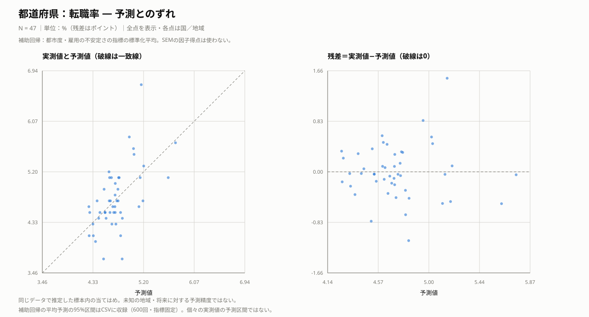
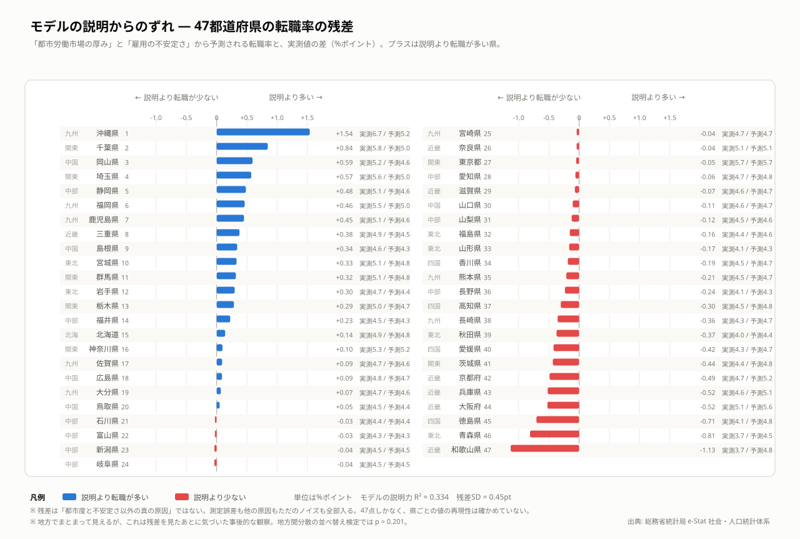
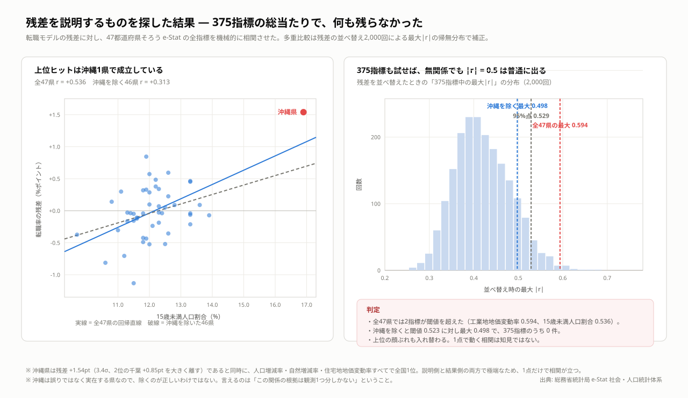

都道府県の転職 — 独立した2つの経路
都市労働市場が厚い県ほど、転職率が高いという関連が見られました。都市度と雇用の不安定さは、ほぼ相関しない別の側面として捉えられます。雇用の不安定さと転職率との関係には不確実性が残ります。
分析手法：構造方程式モデリング（SEM）
結果を図で見る

考察
転職率の高さを説明する候補として、都市の労働市場の厚みと雇用の不安定さを検討したところ、より明確な根拠が得られたのは都市側の関係でした。両者の相関は点推定ではほぼなく、東京と沖縄のように転職率が高い県でも、その背景となる指標の組み合わせは異なります。ただし、不安定さから転職率への経路は推定区間が0をまたぎ、不安定さだけで沖縄を説明できるわけでもありません。補助回帰でも沖縄には大きな残差が残ります。
この違いを確かめるうえで、結果の頑健性の検証が重要でした。不安定さからの経路は沖縄を除くと弱まり、残差と関連する指標を総当たりした探索でも、多重比較補正後の候補が沖縄の除外で残りませんでした。地方別に残差がまとまって見えた点も検定では支持されず、結論にすることを見送りました。目立つ地域や見た目のまとまりに説明を与えたくなっても、それが他の地域でも成り立つかは別に確かめる必要があります。
今回の地域集計からは、誰が何を理由に転職し、その後どうなったかまでは分かりません。都市で転職が多いことを、良いマッチングや賃金上昇と同一視することもできません。次の課題は個票を使い、自発的な転職と失職後の転職、転職前後の賃金や職務の変化を分けて調べることです。それによって、移動の多さと個人にとっての便益を結びつけて検証できます。
具体例で見る：どこまで説明できているか
主要国・身近な地域をあらかじめ指定し、それに加えて各指標で残差の絶対値が最小の地域、正の残差が最大の地域、負の残差が最小の地域を機械的に選びました。同じ地域は1行にまとめています。残差の大小は記述的な比較であり、統計的な異常の判定ではありません。
転職率（％・差はポイント）
| 国・地域 | 選定理由 | 実測 | 予測 | 実測−予測 | 平均予測の95％区間 | 読み取り |
|---|---|---|---|---|---|---|
| 東京都 | 指定した比較例 | 5.70 | 5.75 | -0.05 | [5.10, 6.51] | 実測値は予測値を0.05ポイント下回る。 |
| 大阪府 | 指定した比較例 | 5.10 | 5.62 | -0.52 | [5.18, 6.22] | 実測値は予測値を0.52ポイント下回る。 |
| 沖縄県 | 指定した比較例／予測を最も上回る | 6.70 | 5.16 | +1.54 | [4.48, 5.78] | 実測値は予測値を1.54ポイント上回る。 |
| 石川県 | 予測に最も近い | 4.40 | 4.43 | -0.03 | [4.18, 4.71] | 実測値は予測値を0.03ポイント下回る。 |
| 和歌山県 | 予測を最も下回る | 3.70 | 4.83 | -1.13 | [4.56, 5.09] | 実測値は予測値を1.13ポイント下回る。 |
東京は補助回帰の予測に近い一方、沖縄は都市度と雇用の不安定さを考慮しても予測を上回ります。したがって「沖縄は雇用の不安定さで説明できる」とは言い切れません。産業構成・年齢構成や転職理由の違いは調べる候補ですが、既存の指標探索では頑健な追加説明が得られておらず、理由は未特定です。
補助回帰の区間は合成指標を固定した600回の復元抽出による平均予測の区間です。個別の実測値の予測区間ではなく、区間の外にあるだけで異常とは判定できません。すべて標本内の当てはめです。
ブートストラップによる判定
| パス | 標準化係数 | ブートストラップ95%区間 | 判定 |
|---|---|---|---|
| 都市労働市場の厚み → 転職率 | +0.494 | [+0.201, +0.748] | 0を含まない |
| 雇用の不安定さ → 転職率 | +0.396 | [-0.013, +0.699] | 0をまたぐ |
| 雇用の不安定さ ↔ 都市労働市場の厚み | -0.026 | [-0.324, +0.408] | 0をまたぐ |
予測とのずれ
左は実測値と予測値（破線上で一致）、右は予測値と残差です。残差が正なら予測より高く、負なら低い値です。同じ標本に当てはめた結果であり、未知の地域や将来への予測精度ではありません。
こちらはSEMそのものの予測ではなく、指標の標準化平均を使った補助回帰です。健康は豊かさのみ、転職は都市度と雇用の不安定さ、国は制度・所得調整後の人的資本・初期所得を使います。国の結果変数は一人当たりGDPの対数差×100で、SEMの潜在成長因子や年率ではありません。
CSVのmean_ci_low／mean_ci_highは、合成指標を固定した600回の復元抽出による平均予測の95％区間です。前処理の不確実性は含まず、個々の実測値が入る予測区間でもありません。

表のregionは国・地域名、observedは実測値、predictedは予測値、residualは実測値−予測値です。地域名で検索できます。
転職率：実測・予測・残差job_prediction_diagnostics.csv — クリックで表示
region observed predicted residual mean_ci_low mean_ci_high 北海道 4.9 4.759386174890794 0.14061382510920595 4.313758845107431 5.162952022610683 青森県 3.7 4.512592315253056 -0.8125923152530561 4.265011277804103 4.736757760087049 岩手県 4.7 4.401321644828515 0.2986783551714849 4.212499490038292 4.556655170540116 宮城県 5.1 4.770589998752076 0.32941000124792374 4.542233642338911 4.991979754713461 秋田県 4.0 4.374194061727941 -0.3741940617279411 4.1721623906218595 4.5528071627840365 山形県 4.1 4.265116460123229 -0.16511646012322956 4.034548079636157 4.480064354358096 福島県 4.4 4.555686190131532 -0.15568619013153207 4.388806323349713 4.71626169848047 茨城県 4.4 4.835377123748149 -0.4353771237481485 4.643078468763611 5.029423019406652 栃木県 5.0 4.713702720765672 0.28629727923432835 4.59357374322025 4.836319857430566 群馬県 5.1 4.781244626662874 0.318755373337126 4.642755926045535 4.933899506452399 埼玉県 5.6 5.027054146886144 0.5729458531138558 4.846403264229274 5.287618769512101 千葉県 5.8 4.955145442080879 0.8448545579191205 4.7981147413878125 5.183549278281418 東京都 5.7 5.74859188851493 -0.048591888514930126 5.1028807950890105 6.513990131273288 神奈川県 5.3 5.202528013348682 0.09747198665131762 4.932755453018286 5.585164895616611 新潟県 4.5 4.5380587479427215 -0.03805874794272146 4.404511055128066 4.66609829131571 富山県 4.3 4.3293387441881555 -0.02933874418815563 4.051884226639796 4.615978586333396 石川県 4.4 4.428181490273793 -0.028181490273792242 4.178463996457664 4.708237085142707 福井県 4.5 4.274799430940944 0.22520056905905594 3.9346508741497237 4.645169445526352 山梨県 4.5 4.623286472323924 -0.1232864723239242 4.50920834072744 4.737490675168815 長野県 4.1 4.336463613994331 -0.23646361399433147 4.077660276985583 4.598691307387727 岐阜県 4.5 4.538612636426009 -0.03861263642600932 4.344335297117703 4.747202448082563 静岡県 5.1 4.615985665790276 0.48401433420972406 4.471549509581826 4.765357545295191 愛知県 4.7 4.762975411958114 -0.06297541195811363 4.52792739694666 5.033006904565143 三重県 4.9 4.521525507143085 0.37847449285691503 4.3249725113197135 4.7265700768540615 滋賀県 4.6 4.6711108260680785 -0.07111082606807884 4.520000319470567 4.8345807218626335 京都府 4.7 5.189175359094647 -0.4891753590946468 4.960519961461979 5.543888084078878 大阪府 5.1 5.62401297522804 -0.5240129752280405 5.177704411139656 6.215568416786174 兵庫県 4.6 5.120655126540706 -0.5206551265407064 4.818060851905805 5.46767552551666 奈良県 5.1 5.141817479641437 -0.04181747964143767 4.816301860079261 5.510778626908744 和歌山県 3.7 4.831970119556748 -1.1319701195567475 4.561539122794611 5.088575696918846 鳥取県 4.5 4.44995491050913 0.05004508949086972 4.282817924162998 4.60378093824187 島根県 4.6 4.260008425407061 0.33999157459293894 3.9477910357947126 4.5714569523512125 岡山県 5.2 4.605938429554196 0.5940615704458043 4.486508891641887 4.725829091202407 広島県 4.8 4.7106577525797855 0.08934224742021435 4.588681256050334 4.834341523053191 山口県 4.6 4.707233858921827 -0.1072338589218278 4.556585969519413 4.853558981211165 徳島県 4.1 4.805881307203714 -0.7058813072037147 4.512796554614035 5.083979467253101 香川県 4.5 4.6873236834384695 -0.1873236834384695 4.5730274842053635 4.803452765787407 愛媛県 4.3 4.724239181784624 -0.42423918178462383 4.490256219975874 4.954991733008195 高知県 4.5 4.804550449131189 -0.304550449131189 4.501612506363146 5.09145007499681 福岡県 5.5 5.036190440117186 0.46380955988281425 4.699939841780837 5.367550905794042 佐賀県 4.7 4.609431588730916 0.09056841126908388 4.490048961054237 4.726729460552131 長崎県 4.3 4.655785496077691 -0.35578549607769094 4.466267316758459 4.841312409713014 熊本県 4.5 4.712461844875213 -0.2124618448752127 4.460937153568144 4.955357850747788 大分県 4.7 4.630712869738698 0.06928713026130229 4.42238025584588 4.838272765854195 宮崎県 4.7 4.740965513626161 -0.040965513626161076 4.324007683901245 5.121509254069529 鹿児島県 5.1 4.647887340825529 0.4521126591744711 4.369744196795129 4.905023103033839 沖縄県 6.7 5.160276492653112 1.5397235073468885 4.484271407617606 5.78358705189178
予測と残差の計算・図の生成prediction_diagnostics.py — クリックで表示
"""各分析の標本内当てはめと残差。SEMと補助回帰を明確に区別する。""" import numpy as np import pandas as pd import paths from make_path_diagram import text, esc, SURFACE, INK, INK3, C_POS, BOX_LINE def auxiliary(names, y, predictors): """固定した合成指標を使うOLS。区間は合成指標を固定した条件付き区間。""" x = np.column_stack([np.ones(len(y)), predictors]) y = np.asarray(y, dtype=float) fitted = x @ np.linalg.lstsq(x, y, rcond=None)[0] rng = np.random.default_rng(2026) draws = [] for _ in range(600): ix = rng.integers(0, len(y), len(y)) draws.append(x @ np.linalg.lstsq(x[ix], y[ix], rcond=None)[0]) lo, hi = np.quantile(draws, [.025, .975], axis=0) return pd.DataFrame(dict(region=list(names), observed=y, predicted=fitted, residual=y-fitted, mean_ci_low=lo, mean_ci_high=hi)) def compute(): from sem_country_v2 import prepare, HCR from sem_analysis import derive from pref_residuals import compute as pref_compute from job_residuals import compute as job_compute from muni_path import wide, V, fit z = prepare() gov = z[['rule_of_law', 'gov_effect', 'control_corrupt', 'reg_quality']].mean(axis=1) country = auxiliary(z.country, derive().loc[z.index, 'g_gdp'] * 100, np.column_stack([gov, z[HCR].mean(axis=1), z.init_gdp])) p = pref_compute() j, _ = job_compute() datasets = [ ('country', '国：一人当たりGDPの成長', '対数差×100', country, '補助回帰：制度・所得調整後人的資本の標準化平均と初期所得。SEMの潜在成長因子の予測ではない。'), ('health_m', '都道府県：平均寿命（男）', '年', auxiliary(p.pref, p.le_m, p[['wealth']]), '補助回帰：豊かさの3指標の標準化平均のみ。医療供給量を含むSEM全体の予測ではない。'), ('health_f', '都道府県：平均寿命（女）', '年', auxiliary(p.pref, p.le_f, p[['wealth']]), '補助回帰：豊かさの3指標の標準化平均のみ。医療供給量を含むSEM全体の予測ではない。'), ('job', '都道府県：転職率', '%（残差はポイント）', auxiliary(j.pref, j.jobchg, j[['urban','precar']]), '補助回帰：都市度・雇用の不安定さの指標の標準化平均。SEMの因子得点は使わない。'), ] w = wide() zz = (w[V] - w[V].mean()) / w[V].std() estimates = fit(zz).inspect() pred = np.zeros(len(w)) for _, row in estimates[(estimates.op == '~') & (estimates.lval == 'move_rate')].iterrows(): pred += row.Estimate * zz[row.rval].to_numpy() pred = pred * w.move_rate.std() + w.move_rate.mean() names = [f'{name} [{code}]' for code, name in zip(w.index, w['name'])] d = pd.DataFrame(dict(region=names, observed=w.move_rate.to_numpy(), predicted=pred, residual=w.move_rate.to_numpy()-pred)) datasets.append(('muni', '市区町村：総移動率', '%（残差はポイント）', d, 'パスモデルの総移動率の式：通勤流出率・単独世帯割合・高齢化率・人口密度の実測値から当てはめ。')) return datasets def build(title, unit, d, method): out = [f'<svg xmlns="http://www.w3.org/2000/svg" width="1280" height="690" viewBox="0 0 1280 690" role="img">', f'<title>{esc(title)}：実測・予測と残差</title>', f'<rect width="1280" height="690" fill="{SURFACE}"/>', text(40, 38, title + ' — 予測とのずれ', 22, INK, '700'), text(40, 66, f'N = {len(d):,} ｜単位：{unit}｜全点を表示・各点は国／地域', 13, INK3), text(40, 92, method, 12, INK3)] for panel, ycol in enumerate(['observed','residual']): left, top, size = 92 + panel * 620, 154, 440 x = d.predicted.to_numpy(); y = d[ycol].to_numpy() if panel == 0: low = min(x.min(), y.min()); high = max(x.max(), y.max()) pad = (high-low)*.08 or 1 xmin,ymin = low-pad,low-pad; xmax,ymax = high+pad,high+pad else: pad = np.ptp(x)*.08 or 1 xmin,xmax = x.min()-pad,x.max()+pad edge=max(abs(y.min()),abs(y.max()))*1.08 or 1 ymin,ymax=-edge,edge sx=lambda v:left+(v-xmin)/(xmax-xmin)*size sy=lambda v:top+size-(v-ymin)/(ymax-ymin)*size out.append(text(left, 128, '実測値と予測値（破線は一致線）' if panel==0 else '残差＝実測値−予測値（破線は0）',15,INK,'600')) for v in np.linspace(xmin,xmax,5): out.append(f'<path d="M{sx(v):.2f},{top}v{size}" stroke="{BOX_LINE}"/>') out.append(text(sx(v), top+size+24, f'{v:.2f}',11,INK3,'400','middle')) for v in np.linspace(ymin,ymax,5): out.append(f'<path d="M{left},{sy(v):.2f}h{size}" stroke="{BOX_LINE}"/>') out.append(text(left-10,sy(v)+4,f'{v:.2f}',11,INK3,'400','end')) out.append(f'<path d="M{left},{top}v{size}h{size}" fill="none" stroke="{INK3}"/>') line = f'M{sx(xmin)},{sy(xmin)}L{sx(xmax)},{sy(xmax)}' if panel==0 else f'M{left},{sy(0)}h{size}' out.append(f'<path d="{line}" stroke="{INK3}" stroke-dasharray="5 4" fill="none"/>') for (_, r), xx, yy in zip(d.iterrows(), x, y): label=f'{r.region}：実測 {r.observed:.3f} / 予測 {r.predicted:.3f} / 残差 {r.residual:+.3f}' out.append(f'<circle cx="{sx(xx):.2f}" cy="{sy(yy):.2f}" r="3" fill="{C_POS}" opacity="0.6"><title>{esc(label)}</title></circle>') out.append(text(left+size/2,top+size+48,'予測値',13,INK,'400','middle')) out += [text(40,658,'同じデータで推定した標本内の当てはめ。未知の地域・将来に対する予測精度ではない。',12,INK3), text(40,679,'補助回帰の平均予測の95%区間はCSVに収録（600回・指標固定）。個々の実測値の予測区間ではない。' if 'mean_ci_low' in d else '地域名と全数値は付属CSVで検索可能。残差の大きさだけで原因や異常を断定しない。',12,INK3), '</svg>'] return '\n'.join(out) def main(): for key,title,unit,d,method in compute(): assert np.isfinite(d.select_dtypes('number')).all().all() assert np.allclose(d.observed-d.predicted,d.residual) d.to_csv(paths.result(f'{key}_prediction_diagnostics.csv'),index=False) paths.figure(f'{key}_prediction_diagnostics.svg').write_text(build(title,unit,d,method)) print(key, len(d)) if __name__ == '__main__': main()


データと分析方法
e-Statの都道府県データを用い、都市労働市場の厚みと雇用の不安定さを潜在変数とするSEMで、転職率との関係を推定しました。小標本のため、ブートストラップ区間と1県抜き診断で結果の不確実性を確認します。
解釈上の注意
結果データ
推定係数job_estimates.csv — クリックで表示
lval op rval Estimate std se z-value p ldens ~ URBAN 1.0 0.909589241090004 - - - inflow ~ URBAN 0.8596838676766904 0.781978100404827 0.11881683687756572 7.235370762775921 4.642952688982405e-13 wage_f ~ URBAN 1.0645350823128537 0.9683079390284067 0.0998665937770509 10.659571354548607 0.0 sep ~ PRECAR 1.0 0.7717862598394689 - - - unemp ~ PRECAR 1.1750354415785482 0.9069423619403005 0.3686436237360457 3.1874563017444286 0.0014353014422141541 jobchg ~ URBAN 0.5449011112981378 0.4955942354399884 0.1388501548829744 3.9243824521007316 8.695250357959594e-05 jobchg ~ PRECAR 0.5048998338227039 0.38966864962646086 0.18039899969243997 2.7987950857859665 0.005129367749722835 URBAN ~~ PRECAR -0.051121635897163537 -0.07441091894825402 0.11157682740299145 -0.458174309904556 0.6468272150929519 URBAN ~~ URBAN 0.8096296207692927 1.0 0.20413883897462914 3.966073407843518 7.306636755033402e-05 PRECAR ~~ PRECAR 0.582974771760835 1.0 0.24927519797441786 2.3386794053146223 0.019352031798801184 inflow ~~ inflow 0.38016947525657646 0.38851025048725846 0.08640756837549136 4.399724264894462 1.0838851192573884e-05 jobchg ~~ jobchg 0.6178664572967137 0.6312848040069196 0.1368325939192786 4.515491810793963 6.316998792943451e-06 ldens ~~ ldens 0.16894908073594256 0.17264741249331056 0.057899013258869675 2.917995855605413 0.0035228903217996432 sep ~~ sep 0.3957389471785077 0.40434596912300386 0.18629466554298754 2.1242634405173915 0.03364812098930159 unemp ~~ unemp 0.17365284775456527 0.1774555521181489 0.23396628789692397 0.742213116747518 0.4579582226294807 wage_f ~~ wage_f 0.06104117533924316 0.062379735214559535 0.05353376432387545 1.1402369347466053 0.2541876037495763 県別の転職率残差job_residuals.csv — クリックで表示
pref region jobchg hat res urban precar 沖縄県 九州 6.7 5.160276492653112 1.5397235073468885 -0.37226871251609234 2.613030442345034 千葉県 関東 5.8 4.955145442080879 0.8448545579191205 0.739931768948345 0.057941994828721574 岡山県 中国 5.2 4.605938429554196 0.5940615704458043 -0.11644933100860626 -0.45306375821373673 埼玉県 関東 5.6 5.027054146886144 0.5729458531138558 0.9750118011019411 0.08117495472192643 静岡県 中部 5.1 4.615985665790276 0.48401433420972406 0.06431076537488166 -0.6563073955512608 福岡県 九州 5.5 5.036190440117186 0.46380955988281425 0.2831995372889535 1.0915998220122511 鹿児島県 九州 5.1 4.647887340825529 0.4521126591744711 -0.7516252962454723 0.6386466275507945 三重県 近畿 4.9 4.521525507143085 0.37847449285691503 -0.03340411077720477 -0.9815091517521031 島根県 中国 4.6 4.260008425407061 0.33999157459293894 -0.49545738760296576 -1.6144730236578801 宮城県 東北 5.1 4.770589998752076 0.32941000124792374 -0.2472249821227901 0.5341281491833838 群馬県 関東 5.1 4.781244626662874 0.318755373337126 0.11453503937896359 0.08117495472192643 岩手県 東北 4.7 4.401321644828515 0.2986783551714849 -0.961673990575394 -0.2730530807694168 栃木県 関東 5.0 4.713702720765672 0.28629727923432835 -0.03038923952756299 -0.04657648353868842 福井県 中部 4.5 4.274799430940944 0.22520056905905594 -0.2939414193260639 -1.823509980392701 北海道 北海 4.9 4.759386174890794 0.14061382510920595 -0.9478198497331659 1.457414496298188 神奈川県 関東 5.3 5.202528013348682 0.09747198665131762 1.7140693293927616 -0.09304240332509722 佐賀県 九州 4.7 4.609431588730916 0.09056841126908388 -0.28724484643823617 -0.19756088169250757 広島県 中国 4.8 4.7106577525797855 0.08934224742021435 0.1919023958215523 -0.3717782397395303 大分県 九州 4.7 4.630712869738698 0.06928713026130229 -0.6120799595264772 0.3599107911363598 鳥取県 中国 4.5 4.44995491050913 0.05004508949086972 -0.46281666348346845 -0.7317995946281703 石川県 中部 4.4 4.428181490273793 -0.028181490273792242 -0.08562722381744287 -1.3647634665339474 富山県 中部 4.3 4.329338744188156 -0.029338744188156518 -0.36091501662053704 -1.4634886255040611 新潟県 中部 4.5 4.5380587479427215 -0.03805874794272146 -0.5038066451939684 -0.244026801478916 岐阜県 中部 4.5 4.538612636426009 -0.03861263642600932 0.026410812823629157 -0.9815091517521031 宮崎県 九州 4.7 4.740965513626161 -0.040965513626161076 -0.9207911079639958 1.3296630580375726 奈良県 近畿 5.1 5.141817479641437 -0.04181747964143767 0.6862406070399847 1.0451339022258432 東京都 関東 5.7 5.74859188851493 -0.048591888514930126 4.174682378266571 -0.8595510328887852 愛知県 中部 4.7 4.762975411958114 -0.06297541195811363 0.8118114529847116 -0.9815091517521031 滋賀県 近畿 4.6 4.6711108260680785 -0.07111082606807884 0.2531310832166999 -0.6505140761539643 山口県 中国 4.6 4.707233858921827 -0.1072338589218278 -0.165338144120774 0.11020123401242779 山梨県 中部 4.5 4.623286472323924 -0.1232864723239242 -0.2179523611281843 -0.22658716098300768 福島県 東北 4.4 4.555686190131532 -0.15568619013153207 -0.6376164075791998 0.028915715538221476 山形県 東北 4.1 4.265116460123229 -0.16511646012322956 -0.8561159927454408 -1.0860276301195135 香川県 四国 4.5 4.6873236834384695 -0.1873236834384695 -0.05201176583382618 -0.14530164250880193 熊本県 九州 4.5 4.712461844875213 -0.2124618448752127 -0.5089344532987261 0.6154136676575896 長野県 中部 4.1 4.336463613994331 -0.23646361399433147 -0.40669331231301875 -1.3647634665339474 高知県 四国 4.5 4.804550449131189 -0.304550449131189 -0.4028790047875373 0.9173824639652279 長崎県 九州 4.3 4.655785496077691 -0.35578549607769094 -0.4702340352720354 0.28441859205945064 秋田県 東北 4.0 4.374194061727941 -0.3741940617279411 -1.1273558592926245 -0.1743279217993033 愛媛県 四国 4.3 4.724239181784624 -0.42423918178462383 -0.41362980044884984 0.5399214685806804 茨城県 関東 4.4 4.835377123748149 -0.4353771237481485 0.10436436032957046 0.3599107911363598 京都府 近畿 4.7 5.189175359094647 -0.4891753590946468 1.4884535478113328 0.15666715379883633 兵庫県 近畿 4.6 5.120655126540706 -0.5206551265407064 0.6828795196969031 0.9464087432557284 大阪府 近畿 5.1 5.62401297522804 -0.5240129752280405 1.974874209209947 1.6026055750547095 徳島県 四国 4.1 4.805881307203714 -0.7058813072037147 -0.3607855204956208 0.8651232247815228 青森県 東北 3.7 4.512592315253056 -0.8125923152530561 -1.000628609964395 0.3250911924485626 和歌山県 近畿 3.7 4.831970119556748 -1.1319701195567475 -0.1820975589270641 0.743165105918205 375指標スクリーニングjob_screen.csv — クリックで表示
code name r_47 r_46_excl_okinawa #L04306 標準価格対前年平均変動率(工業地) 0.5937848665893674 0.3562143081815478 #A03501 15歳未満人口割合 0.53605325325996 0.31290227158757744 #A03404 老年化指数 -0.5142784647687609 -0.37966129418555594 #L04302 標準価格対前年平均変動率(住宅地) 0.5062144516887516 0.20384326568374433 #I06102 悪性新生物(腫瘍)による死亡者数（人口10万人当たり） -0.48912430172513394 -0.3670596682421782 #A05201 自然増減率 0.4880144824633551 0.3300330417434325 #A05101 人口増減率 0.48479714093438064 0.3764216298757539 #C0460101 郵便貯金残高(人口１人当たり) -0.48430152385725767 -0.26116276961255336 #A05307 転入超過率 0.4798395139615884 0.4458168693392249 #A05202 粗出生率(人口千人当たり) 0.47743744481271033 0.22041001264093654 #I0910105 一般診療所数（人口10万人当たり） -0.47128648652242644 -0.4032011144380365 #L04304 標準価格対前年平均変動率(商業地) 0.4583139529286818 0.18688075963806916 #A02104 人口性比(65歳以上人口) 0.4551097454408658 0.3797282111770965 #I06105 心疾患(高血圧性を除く)による死亡者数（人口10万人当たり） -0.4542924962046421 -0.35195349395265885 #A03503 65歳以上人口割合 -0.44665951287503863 -0.3130932766856813 #A0520401 粗死亡率(男)(人口千人当たり) -0.4444562457172023 -0.37038340951151283 #I0520502 平均余命(65歳・女) 0.4360229012060017 0.2919775831950377 #I07201 2,500g未満の出生率（出生数千当たり） 0.4277258657390239 0.2874216713162234 #I06101 生活習慣病による死亡者数（人口10万人当たり） -0.42175196518655383 -0.3080910693313665 #A05204 粗死亡率(人口千人当たり) -0.4194412312110312 -0.3344126499827624 #A06304 65歳以上世帯員の単独世帯の割合 -0.4174213167551202 -0.39092912319062956 #A02101 人口性比(総数) 0.4127228788261948 0.3979341321860852 #A0160103 外国人人口(アメリカ)(人口10万人当たり) 0.4088935782156811 -0.05037359626325678 #L04111 消費者物価指数対前年変化率(教育) -0.4086846890759133 -0.4372127314862592 #A03402 老年人口指数 -0.4032096089671155 -0.30574628739207116 #A0520402 粗死亡率(女)(人口千人当たり) -0.39289220573594613 -0.3003387000887407 #I1520302 全国健康保険協会管掌健康保険受診率（被扶養者千人当たり） -0.39264567681531864 -0.17762037061548738 #D0311101 商工費割合(都道府県財政) -0.3912864654647466 -0.43166935783017024 #I0520501 平均余命(65歳・男) 0.38995481271557547 0.3662553787779021 #L02420 その他の消費支出割合(二人以上の世帯) -0.38895749427361914 -0.3428172693286014 #F03402 大学新規卒業者の無業者率 0.3822124913607186 0.11003152578530295 #I04104 通院者率（人口千人当たり） -0.3798878431268494 -0.20637767081070832 #I1520301 全国健康保険協会管掌健康保険受診率（被保険者千人当たり） -0.37959962012075404 -0.21645178165793588 #A06301 65歳以上の世帯員のいる世帯割合 -0.3776671252485872 -0.25221585589271234 #I0420102 一般病院の１日平均外来患者数（人口10万人当たり） -0.3726399680405975 -0.33526541729972165 #A06302 夫65歳以上、妻60歳以上の夫婦のみの世帯の割合 -0.37173602167147446 -0.18437260654597507 #F02301 雇用者比率 0.3694468541723394 0.4964094153243746 #A06601 婚姻率(人口千人当たり) 0.36930197018885835 0.216246502097642 #A05218 年齢別死亡率(65歳以上)(人口千人当たり) -0.3603170250967263 -0.3054700521073932 #A0430702 死別者割合(60歳以上・女) -0.3593376800562013 -0.23575731553806278 #J01200 身体障害者手帳交付数（人口千人当たり） -0.355978249582089 -0.4446943000246526 #I0930302 一般病院看護師・准看護師数（100病床当たり） 0.35412356602347095 0.2544891871682794 #I11101 救急告示病院・一般診療所数（人口10万人当たり） -0.3535490307267783 -0.275340122507134 #I15102 国民健康保険受診率（被保険者千人当たり） -0.35083521618716645 -0.07347272833743725 #A03401 年少人口指数 0.3505050974382897 0.12428352079614186 #J05101 民生委員（児童委員）数（人口10万人当たり） -0.34789872709083763 -0.2676119342764185 #J05202 福祉事務所生活保護申請件数（被保護世帯千世帯当たり） 0.3407387357555511 0.3465625771028558 #E09211 小学校長期欠席児童比率(年度間30日以上)(児童千人当たり) 0.340711677761545 0.16615952220912206 #I0520202 平均余命(20歳・女) 0.3367072595980706 0.29475276884220725 #I0520102 平均余命(０歳・女) 0.33251562699490694 0.2987395691013323 #E0510301 小学校児童数(教員１人当たり) 0.33121599117114403 0.30796761418822505 #E0110103 高等学校数(15～17歳人口10万人当たり) -0.33062110571601666 -0.30381381108939 #D0210301 国庫支出金割合(都道府県財政) 0.32886182504843314 0.021643264629425795 #D0310601 児童福祉費割合(都道府県財政) 0.3277860345823819 0.17114534373578177 #A05308 転入率 0.32520075305148555 0.322655814289775 #I14101 薬局数（人口10万人当たり） -0.3235443414741205 -0.20864031144225395 #E0510302 中学校生徒数(教員１人当たり) 0.31843478886303217 0.3354201815442076 #I15106 １人当たりの国民医療費 -0.31842527826942846 -0.29442706818622816 #L02412 住居費割合(二人以上の世帯) 0.31836424987870887 0.1918007987882745 #I14102 医薬品販売業数（人口10万人当たり） -0.314220404715713 -0.2656614126120319 #F08201 労働災害発生の頻度 0.3110903458485046 0.08387920611486012 #I0210105 平均身長（高校２年・男） -0.3110871075285334 -0.15828292799633736 #A0430701 死別者割合(60歳以上・男) -0.3101552486050871 -0.15632202732505468 #I0210104 平均身長（中学２年・女） -0.30966041615508255 -0.11971360265742576 #E10105 幼保連携型認定こども園教育費（在園者１人当たり） -0.3078503154892196 -0.3343190663106472 #C02206 従業者１～４人の事業所割合(民営) -0.3077590208558338 -0.4743054293664876 #E09401 中学校卒業者の進学率 -0.3064382943697906 -0.2499325502271522 #D0331603 生徒１人当たり公立中学校費(都道府県・市町村財政合計) -0.3043601571164943 -0.2750669462765371 #A03403 従属人口指数 -0.3042308001795168 -0.2568886441913557 #I10204 精神科病院病床利用率 0.3030466412330756 0.23528194480446277 #L02602 平均消費性向(二人以上の世帯のうち勤労者世帯) 0.30276484116068514 0.2317431664280331 #A03502 15～64歳人口割合 0.30235009814201164 0.24078728511108044 #E0110102 中学校数(12～14歳人口10万人当たり) -0.3003880382405612 -0.29804061844321156 #D0331503 児童１人当たり公立小学校費(都道府県・市町村財政合計) -0.29717849792326306 -0.30929281660845337 #C02208 従業者10～29人の事業所割合(民営) 0.2970597193612303 0.4883888950162198 #C02207 従業者5～9人の事業所割合(民営) 0.2968494938544137 0.4075007747953199 #E0110101 小学校数(６～11歳人口10万人当たり) -0.29499865954330273 -0.25248261719664666 #E10102 小学校教育費(児童１人当たり) -0.2943054473371953 -0.2772762756436361 #C04105 耕地面積比率 0.29371764767247244 0.260065667022499 #A06602 離婚率(人口千人当たり) 0.292319596462425 -0.044422578538737365 #C03206 従業者１～４人の事業所の従業者割合(民営) -0.2921993176956216 -0.4056470927162778 #I0210205 平均体重（高校２年・男） -0.2780937446239159 -0.23029156571073162 #F0620310 新規学卒者所定内給与額（高専・短大）（女） 0.2762844530758706 0.27916052856597245 #D03312 人口１人当たり警察費(都道府県財政) -0.27535985656279455 -0.28500304975154445 #E10101 幼稚園教育費(在園者１人当たり) -0.27188726467612806 -0.19166836658835304 #F01201 第１次産業就業者比率 -0.27132637380471697 -0.28361614751030034 #E0510206 中学校生徒数(１学級当たり) 0.2704461664686805 0.29635160656049564 #I0210106 平均身長（高校２年・女） -0.2657102715557447 -0.06216787028335549 #E0110106 認定こども園数(０～５歳人口10万人当たり) -0.26522727611583286 -0.2785579180624421 #I1520502 全国健康保険協会管掌健康保険医療費（被扶養者１人当たり） -0.2640796542167308 -0.19338595684917098 #I07101 死産率（出産数千当たり） 0.26285982871524227 0.09923929311998497 #I10207 精神科病院在院患者数（常勤医師１人１日当たり） -0.261636733896589 -0.17346156299135415 #I0910206 介護療養型医療施設数（65歳以上人口10万人当たり） -0.2599031030117834 -0.3024653620821623 #A0521901 年齢調整死亡率(男)(人口千人当たり) -0.2598492563545735 -0.33140175911225134 #E0510205 小学校児童数(１学級当たり) 0.25938102750564385 0.2790453248769492 #E0510303 高等学校生徒数(教員１人当たり) 0.2585339075211463 0.30628176603023777 #E09503 最終学歴が短大・高専卒の者の割合 0.25632898792864234 0.23825332079993425 #E10103 中学校教育費(生徒１人当たり) -0.2541221070870569 -0.2086031405883973 #C01121 県内総生産額対前年増加率(平成27年基準) 0.2508761509989254 0.15827861696087417 #E08201 専修学校生徒数(人口千人当たり) 0.24920075433968192 0.16521058806604985 #C01126 県民総所得対前年増加率(名目)(平成27年基準) 0.24622423075901628 0.16037720559129684 #A02103 人口性比(15～64歳人口) 0.24381904000321492 0.30382657580161876 #L02736 土地家屋借金純減率(二人以上の世帯のうち勤労者世帯) -0.24121413880613823 -0.1966745018063164 #I0920101 医療施設に従事する医師数（人口10万人当たり） -0.2359797192729836 -0.2692572745214431 #I0520201 平均余命(20歳・男) 0.2342125921789288 0.3323068475419209 #I0520101 平均余命(０歳・男) 0.23150620417088494 0.3289621163130721 #I04102 一般病院年間新入院患者数（人口10万人当たり） -0.22818609501966172 -0.2636876489154666 #I0910106 歯科診療所数（人口10万人当たり） -0.22451140076380272 -0.15198714919012335 #I0210203 平均体重（中学２年・男） -0.22401113692006924 -0.2890100827753435 #D0311501 教育費割合(都道府県財政) 0.22350163803261153 0.25851051302236977 #I0910103 一般病院数（人口10万人当たり） -0.22325036837725706 -0.2071811957257685 #I11102 救急自動車数（人口10万人当たり） -0.22076092705740327 -0.2242965998865313 #L04114 消費者物価指数対前年変化率(総合：食料(酒類を除く)及びエネルギーを除く) -0.22073082773462277 -0.012230613354153324 #J03501 児童福祉施設等従事者数（人口10万人当たり） 0.22016486189287213 -0.1298435426481547 #I0910203 一般病院病床数（人口10万人当たり） -0.21760245939773828 -0.22417817570041876 #A0521902 年齢調整死亡率(女)(人口千人当たり) -0.2170555364672592 -0.2346775342404866 #C0410102 就業者１人当たり農業産出額(個人経営体) 0.21527862602994333 0.2169061960449353 #F01203 第３次産業就業者比率 0.21406785725434543 0.08012834207383178 #I10106 一般病院外来患者数（常勤医師１人１日当たり） -0.21200309713063675 -0.06699409082908332 #E09402 高等学校卒業者の進学率 -0.21158783701140083 -0.08022454826181655 #A0160101 外国人人口(韓国・朝鮮)(人口10万人当たり) -0.21031465382165682 -0.1808307793052236 #D0331703 生徒１人当たり公立高等学校費(都道府県・市町村財政合計) -0.20952608508170287 -0.17988372556869872 #I0210103 平均身長（中学２年・男） -0.20911961920884434 -0.15713399489306526 #E0510304 幼稚園在園者数(教員１人当たり) 0.20790582167004307 0.2223528397554977 #D0330403 65歳以上人口１人当たり老人福祉費(都道府県・市町村財政合計) -0.20749630102163288 -0.32678465821587854 #J05109 訪問介護利用者数（訪問介護１事業所当たり） -0.20719251115226278 -0.006729335062676758 #L04109 消費者物価指数対前年変化率(保健医療) 0.20660935548817802 0.2666140047163971 #D0330703 人口１人当たり衛生費(都道府県・市町村財政合計) -0.20622220160958238 -0.19151845315094027 #A0440502 離別者割合(40～49歳・女) -0.1986396378053801 -0.320502291883444 #I04105 有訴者率（人口千人当たり） -0.1986036438071852 -0.0532184827525552 #E09213 不登校による小学校長期欠席児童比率(年度間30日以上)(児童千人当たり) 0.19801656834291861 0.022972556829573235 #C01125 県民所得対前年増加率(平成27年基準) 0.19771653375385828 0.11756664811361926 #J0110806 生活保護介護扶助人員（月平均人口千人当たり） -0.1952877675313364 -0.4063355106739134 #C02209 従業者100～299人の事業所割合(民営) 0.1952240825550692 0.2871454874486358 #C03209 従業者100～299人の事業所の従業者割合(民営) 0.19279351089346852 0.24677264256835893 #A02102 人口性比(15歳未満人口) 0.19227328554297535 0.2212844698029538 #A05203 合計特殊出生率 0.18952094775382208 -0.023301416491091853 #E08101 専修学校数(人口10万人当たり) 0.1889160466218135 0.06826105680433976 #L02414 家具・家事用品費割合(二人以上の世帯) -0.18727288316390844 -0.23959351698370296 #F0350406 高齢一般労働者割合(65歳以上) 0.18548452904443233 0.2239979780622615 #D0320101 人件費割合(都道府県財政) 0.18521117171905105 0.25071521613490877 #D03313 人口１人当たり消防費(東京都・市町村財政合計) -0.18442259401139843 -0.16917819218311525 #A0410801 未婚者割合(45～49歳・男) 0.18403225435179124 0.0939935024431188 #D0130201 地方債現在高の割合(都道府県財政) -0.1838512770259837 0.0013092046866058432 #J02204 有料老人ホーム数（65歳以上人口10万人当たり） 0.17918796432438328 -0.036205088736871935 #A0410501 未婚者割合(30～34歳・男) -0.1787785995288909 -0.13933884108770542 #A0410602 未婚者割合(35～39歳・女) -0.17827523222547484 -0.24941287848403104 #E09501 最終学歴が小学・中学卒の者の割合 -0.17821396301652864 -0.20295515152087124 #A0410502 未婚者割合(30～34歳・女) -0.17583659794396533 -0.23448263377169237 #A05205 年齢別死亡率(０～４歳)(人口千人当たり) -0.1727578388370401 -0.1929625001068948 #I0420202 一般病院の１日平均在院患者数（人口10万人当たり） -0.1727366504888108 -0.19965701036581132 #L02417 交通・通信費割合(二人以上の世帯) 0.1711605759733347 0.2933596697480741 #F0310201 県外就職者比率 0.17009868250112445 0.27060600518122657 #J04204 有料老人ホーム在所者数（65歳以上人口千人当たり） 0.17000887156780078 0.018657261024546682 #D0330503 17歳以下人口１人当たり児童福祉費(都道府県・市町村財政合計) -0.16988841134987812 -0.23441209386710743 #F08102 労働者災害補償保険給付平均支給額 -0.1695569090962998 -0.16310433434998758 #D0110101 財政力指数(都道府県財政) 0.16766004527049472 0.2663413817466628 #L04108 消費者物価指数対前年変化率(被服及び履物) 0.16741195081857654 0.25519138606556213 #J04203 有料老人ホーム定員数（65歳以上人口千人当たり） 0.16655512138267775 0.029959930548182957 #L04113 消費者物価指数対前年変化率(諸雑費) -0.16645421298372196 0.002392267009384953 #D0210201 地方交付税割合(都道府県財政) -0.16519002790511894 -0.24350871360898677 #I06106 脳血管疾患による死亡者数（人口10万人当たり） -0.16504696401412045 -0.07992154106164241 #I0210206 平均体重（高校２年・女） -0.16440546608217946 -0.12542191199553585 #E0610102 大学数(人口10万人当たり) -0.16409330875657188 -0.16661811214113306 #A01302 昼夜間人口比率 -0.163574349567581 -0.20681372324608277 #D0320201 扶助費割合(都道府県財政) 0.16340182211455842 0.02296207258906285 #J05207 知的障害者更生相談所取扱実人員（人口10万人当たり） -0.16324260435223617 -0.1873858757259998 #D02207 納税義務者割合(都道府県民１人当たり) 0.1629621644494016 0.390887454593242 #L02418 教育費割合(二人以上の世帯) 0.1620172148004076 0.215823280740153 #E0620403 私立大学学生数割合 0.16069171853722578 0.21667750060327898 #A05309 転出率 0.16042185901821235 0.18064120045581195 #F02701 他市区町村への通勤者比率 0.1597356201911933 0.15474530138327827 #I1520501 全国健康保険協会管掌健康保険医療費（被保険者１人当たり） -0.15805373054766578 -0.10815084486371769 #I09402 公立一般病院病床数の割合 -0.15453319079204525 -0.16684843435891766 #E0620401 国立大学学生数割合 -0.1544001620160509 -0.19468215224294785 #I07105 妊娠、分娩及び産じょくによる死亡率（出産数10万当たり） -0.15436078409416137 -0.1245325766595193 #I0930202 一般病院常勤医師数（100病床当たり） 0.1538323104943837 0.06868224211586782 #E0610101 短期大学数(人口10万人当たり) -0.15127425895193194 -0.07752766917699497 #F0620312 新規学卒者所定内給与額（大学）（女） 0.1501811251734982 0.09106152144914746 #C03207 従業者５～９人の事業所の従業者割合(民営) -0.14945424758007536 -0.2444892813319999 #I10104 一般病院病床利用率 0.14869474688968584 0.003098174083283602 #I0920301 医療施設に従事する看護師・准看護師数（人口10万人当たり） -0.14794026291903814 -0.16476117742092986 #A01401 人口集中地区人口比率 0.14769234474620474 0.10121364505787402 #E05204 公立幼稚園在園者比率 0.14766231514767927 0.003382335817968193 #L04115 消費者物価指数対前年変化率(総合：生鮮食品及びエネルギーを除く) -0.1471272481783972 -0.0015577237966279388 #L02211 消費支出(二人以上の世帯)（１世帯当たり１か月間） 0.14470699912271323 0.4576243947665479 #F02501 県内就業者比率 -0.14461439462178474 -0.1786963125697211 #L02416 保健医療費割合(二人以上の世帯) -0.14427956321468782 -0.07384241575327444 #F03403 大学卒業者に占める就職者の割合 -0.1439919926031649 0.10283870879240083 #A01601 外国人人口(人口10万人当たり) 0.14116024576789543 0.19848423647623709 #D0210101 地方税割合(都道府県財政) 0.14019474903151882 0.2519087279116871 #L02413 光熱・水道費割合(二人以上の世帯) -0.1394415747714524 -0.2530471552078516 #C02210 従業者300人以上の事業所割合(民営) 0.1357456158570337 0.19895549384017147 #F08101 労働者災害補償保険給付率 -0.13549774736293002 -0.045494156807669765 #F08202 労働災害の重さの程度 0.1337094651498749 0.10285282500365418 #F0110102 労働力人口比率(女) 0.13311479698391165 0.22367932874255755 #F0610103 月間平均実労働時間数(男) -0.13307569914945583 0.0016723610709435616 #D0311001 農林水産業費割合(都道府県財政) 0.13305328133873984 0.08963257981474533 #J02501 児童福祉施設等数（人口10万人当たり） 0.13291765290201243 -0.1031696579124004 #J042011 老人ホーム定員数（65歳以上人口千人当たり） 0.13222698817040243 0.04419463515562101 #L02415 被服及び履物費割合(二人以上の世帯) -0.1321888983988294 0.05195065030775901 #J022011 老人ホーム数（65歳以上人口10万人当たり） 0.13012418238093443 -0.048913440758269575 #J042021 老人ホーム在所者数（65歳以上人口千人当たり） 0.12991767068176893 0.030010781355919874 #E0940302 出身高校所在地県の県内大学への入学者割合(対大学入学者数) 0.12988436853713697 0.07095284253074158 #L04107 消費者物価指数対前年変化率(家具・家事用品) -0.12756299889942707 -0.008532650679051025 #J04101 生活保護施設定員数（被保護実人員千人当たり） -0.1274971156035854 -0.06492415835245659 #L04103 消費者物価指数対前年変化率(総合：生鮮食品を除く) -0.1266624259439139 0.01855379567192656 #C03210 従業者300人以上の事業所の従業者割合(民営) 0.12614437996301642 0.1665006916046008 #F07102 雇用保険基本手当平均支給額 0.12580010215494444 0.18584041512297797 #I15202 全国健康保険協会管掌健康保険加入者数（人口千人当たり） -0.12427857398696757 -0.2486238717772182 #J04102 生活保護施設在所者数（被保護実人員千人当たり） -0.1241187676756903 -0.06337266641159554 #E01304 公立幼稚園割合 0.12378901242238045 -0.005002070455524351 #A0440501 離別者割合(40～49歳・男) -0.12327117984719718 -0.23723027181628048 #J03101 保護施設従事者数（生活保護被保護実人員千人当たり） -0.12316362631997362 -0.060203460187080546 #I0210204 平均体重（中学２年・女） -0.1223951031587452 -0.11428198028065699 #J0110804 生活保護医療扶助人員（月平均人口千人当たり） -0.12167842100034669 -0.2737808931662513 #D0330203 人口１人当たり民生費(都道府県・市町村財政合計) -0.1210628256991461 -0.20625192841514967 #D0330103 人口１人当たり歳出決算総額(都道府県・市町村財政合計) -0.12026585596592 -0.17157311973069883 #D0310401 社会福祉費割合(都道府県財政) 0.12002830454295631 0.02408415539045138 #I15103 国民健康保険診療費（被保険者１人当たり） -0.11581614387113516 -0.01954594229346941 #J05210 児童相談所受付件数（人口千人当たり） 0.11511664132012758 0.06183529719899638 #I0910107 精神科病院数（人口10万人当たり） -0.11418630496719193 -0.0988521635380284 #A05305 流出人口比率 0.1141099305902534 0.2013920037443391 #F0350303 高齢就業者割合(65歳以上) -0.11306924593308904 0.0796513395031915 #I06104 高血圧性疾患による死亡者数（人口10万人当たり） 0.11097864476386471 0.09432039656180238 #J032011 老人ホーム従事者数（65歳以上人口10万人当たり） 0.10970985062206987 0.044564190629633876 #D0331903 児童１人当たり幼稚園費(都道府県・市町村財政合計) -0.10775087150239035 -0.2335781440422572 #J02101 保護施設数（生活保護被保護実人員10万人当たり）1) -0.10745137633934962 -0.03729575220148483 #D03114 消防費割合(東京都・市町村財政合計) -0.10737703268085182 -0.047790426268570114 #E10104 高等学校教育費(全日制)(生徒１人当たり) -0.10681641036148344 -0.08256687310255001 #J01101 生活保護被保護実世帯数（月平均一般世帯千世帯当たり） -0.10631575641299006 -0.3271870300043394 #I05101 標準化死亡率(基準人口＝昭和５年)（人口千人当たり） -0.10601887453362147 -0.2419950779933076 #I0950102 一般病院数（可住地面積100k㎡当たり） -0.10551282917345313 -0.11297174864690251 #C04605 国内銀行預金残高(人口１人当たり) -0.10520101334445295 -0.0794168298337097 #A0160102 外国人人口(中国)(人口10万人当たり) 0.1051056791744088 0.2091281285609588 #E08102 各種学校数(人口10万人当たり) -0.10317516481339019 -0.13546589101084566 #A0410402 未婚者割合(25～29歳・女) -0.1028080965838122 -0.07785806210987681 #J05208 後期高齢者医療費(被保険者１人当たり) -0.10273523466800498 -0.18241822531634955 #J0610101 国民年金被保険者数(第１号)（20～59歳人口千人当たり） -0.10189501378867978 -0.4976851519075998 #D0330303 人口１人当たり社会福祉費(都道府県・市町村財政合計) -0.10158539266922924 -0.41443822284042137 #A01101 全国総人口に占める人口割合 0.09850377953895993 0.15320100015145238 #A0410701 未婚者割合(40～44歳・男) 0.09849104479872119 0.0638095384733542 #F03103 有効求人倍率 -0.09828552677157092 0.07625970160207576 #D0310801 衛生費割合(都道府県財政) 0.09635258195745793 0.12412542176120513 #E09212 中学校長期欠席生徒比率(年度間30日以上)(生徒千人当たり) 0.09320091762774001 -0.05620736452984579 #J05206 身体障害者更生相談所取扱実人員（人口千人当たり） 0.09271845701475079 -0.31862338902482856 #I15101 国民健康保険被保険者数（人口千人当たり） -0.09121191691285953 -0.4090607218612697 #I06201 自殺者数（人口10万人当たり） -0.0907573876468848 0.01467308741917538 #L04101 消費者物価指数対前年変化率(総合) -0.09074241071068617 0.04951338952485999 #A06202 核家族世帯割合 0.09009056983871352 0.03459791137306103 #E09502 最終学歴が高校・旧中卒の者の割合 -0.08999875124450998 -0.005625066522481256 #J01107 生活保護被保護実人員（月平均人口千人当たり） -0.08989146039124292 -0.2766800856361704 #L04104 消費者物価指数対前年変化率(食料) 0.08962803955812028 0.06402048617084524 #I09401 公立一般病院数の割合 -0.08907418269009082 -0.0775781209701306 #L04102 消費者物価指数対前年変化率(総合：持ち家の帰属家賃を除く) -0.08867291138693723 0.05757612266750206 #E0620402 公立大学学生数割合 -0.0885217295482821 -0.14910338212671234 #A0440601 離別者割合(50～59歳・男) -0.08835149179682592 -0.23512777407344376 #A0410401 未婚者割合(25～29歳・男) -0.08740921498356194 -0.027099703380319192 #I10108 一般病院在院患者数（看護師・准看護師１人１日当たり） -0.08731375925950445 -0.11831832567931669 #E09504 最終学歴が大学・大学院卒の者の割合 0.08395417914055354 0.14412873581511418 #D0331403 人口１人当たり教育費(都道府県・市町村財政合計) -0.08377676524305326 -0.20758318915641324 #I11201 年間救急出動件数（人口千人当たり） -0.08315704974626023 -0.17200997904915044 #A06102 一般世帯の平均人員 0.083029243521572 0.06190581332000611 #L02419 教養娯楽費割合(二人以上の世帯) -0.08280315241550065 0.17413646068331853 #F03303 高等学校卒業者に占める就職者の割合 -0.082365383852606 -0.022764305203051272 #I0420203 精神科病院の１日平均在院患者数（人口10万人当たり） -0.08186845376367265 -0.08893150453283989 #I10105 一般病院平均在院日数 -0.08172015099601783 -0.10248581927060998 #I0420103 精神科病院の１日平均外来患者数（人口10万人当たり） 0.08146426348365009 0.015629765621427084 #A0410302 未婚者割合(20～24歳・女) -0.07969702822230298 0.10180607034897014 #C04106 土地生産性(耕地面積１ヘクタール当たり) -0.07928557318036332 -0.09063190970911514 #A0610101 全国一般世帯に占める一般世帯割合 0.07866760741886898 0.13178523851444152 #I04103 精神科病院年間新入院患者数（人口10万人当たり） -0.07769342639194904 -0.10490609658426653 #I07104 乳児死亡率（出生数千当たり） -0.07765084151190668 -0.06354743967732084 #I0950103 一般診療所数（可住地面積100k㎡当たり） -0.07737295115829247 -0.07121968337302659 #A0410301 未婚者割合(20～24歳・男) -0.07708484030570122 0.030361322391897212 #E09214 不登校による中学校長期欠席生徒比率(年度間30日以上)(生徒千人当たり) -0.0759628799494303 -0.10178639719665449 #D0312301 災害復旧費割合(都道府県財政) 0.07573455990523015 0.11676262413582864 #D0310701 生活保護費割合(都道府県財政) 0.07565103605718633 -0.0564395990596982 #E0410202 中学校教員割合(女) -0.07522674939019502 -0.2492112621242764 #D0331804 児童・生徒１人当たり特別支援学校費(都道府県・市町村財政合計) -0.07491111928177717 -0.05232060056486615 #E08202 各種学校生徒数(人口千人当たり) -0.07042118585515318 -0.055270101372665026 #D0332003 人口１人当たり社会教育費(都道府県・市町村財政合計) 0.06993341691349879 0.04474694377161374 #D0310901 労働費割合(都道府県財政) 0.06989746897991193 0.09090427784642544 #F03304 高等学校新規卒業者の求人倍率 -0.06978211044276823 -0.01633602241568303 #I14202 医薬品販売業数（可住地面積100k㎡当たり） -0.06967329906200842 -0.0686662430555791 #J0110803 生活保護教育扶助人員（月平均人口千人当たり） 0.06947950099556327 -0.08886219715123694 #C0410701 耕地面積(農家１戸当たり) 0.06797476464132578 0.07828682060202526 #F0620103 きまって支給する現金給与月額(男) -0.0665627564386596 0.06629675318154078 #D0140201 投資的経費の割合(都道府県財政) 0.06588840476863937 -0.07974112661688237 #I10107 一般病院在院患者数（常勤医師１人１日当たり） -0.063925100493803 -0.029733472468787804 #D0311201 土木費割合(都道府県財政) -0.06325060658148506 -0.18872209187423847 #F03602 障害者就職率 -0.06282163219261455 -0.08367399758005784 #F01202 第２次産業就業者比率 -0.06210369523110985 0.12656093692621728 #I12201 保健師数（人口10万人当たり） -0.06169908429849733 -0.09112871732497296 #I0910205 精神病床数（人口10万人当たり） -0.0604723261283925 -0.10173495294147086 #D0332103 人口１人当たり災害復旧費(都道府県・市町村財政合計) 0.05995001015329981 0.0987408875948259 #D01401 経常収支比率(都道府県財政) 0.05922599767214913 0.08484111474292606 #D0140301 一般財源の割合(都道府県財政) 0.05896603859172528 0.1722584784188925 #D02206 課税対象所得(納税義務者１人当たり) 0.05820451222899568 0.11830549520463114 #A0410702 未婚者割合(40～44歳・女) -0.05714196299622053 -0.16237397879748502 #J0110805 生活保護住宅扶助人員（月平均人口千人当たり） -0.056300123717548736 -0.22845440558303756 #F02702 他市区町村からの通勤者比率 0.05566166875656711 0.026517687304880456 #J05201 民生委員（児童委員）１人当たり相談・支援件数 0.0549640502870631 0.03128290932831514 #F03401 短大新規卒業者の無業者率 -0.054609567015706774 -0.06368787417193618 #L02411 食料費割合(二人以上の世帯) -0.05418790778898695 -0.2670773127469074 #E0110203 高等学校数(可住地面積100k㎡当たり) -0.05397975073381686 -0.07279917937233536 #F03301 高等学校新規卒業者の就職率 0.05347957603087386 0.1575754004903238 #J02205 介護老人福祉施設数（65歳以上人口10万人当たり） -0.05230580098397 0.0686208132462891 #C03208 従業者10～29人の事業所の従業者割合(民営) -0.051809666798102054 -0.034204701207372096 #I0210102 平均身長（小学５年・女） -0.0511580325213247 -0.07273757983050412 #F06206 女性パートタイムの給与(１時間当たり) 0.05073423982351218 0.04988435924894126 #I0920201 医療施設に従事する歯科医師数（人口10万人当たり） -0.05062142194441673 0.04570754039936574 #I06103 糖尿病による死亡者数（人口10万人当たり） -0.05030141257908493 -0.08308468915325411 #L01201 実収入(二人以上の世帯のうち勤労者世帯)（１世帯当たり１か月間） 0.049539450596478754 0.33213107761776983 #E01303 公立高等学校割合 0.04937918265051021 -0.12723969803025437 #E0610201 短期大学収容力指数 0.04891235026622278 0.0900040201309653 #E0610202 大学収容力指数 -0.04811582855953486 -0.02832647142060532 #I0210101 平均身長（小学５年・男） -0.047834303998247944 -0.01548950900080142 #F03302 高等学校卒業者に占める県外就職者の割合 -0.046636424948503064 -0.11094567161776371 #F0610104 月間平均実労働時間数(女) -0.04650010140371688 0.025750550231631898 #I0821101 病気による小学校長期欠席児童比率(年度間30日以上)(児童千人当たり) 0.04510399671870857 -0.013662619634600465 #L04112 消費者物価指数対前年変化率(教養娯楽) 0.04395070725075746 0.11495163979210521 #E0110201 小学校数(可住地面積100k㎡当たり) -0.04323293691915181 -0.06851493818740444 #E0410201 小学校教員割合(女) -0.043213362263030124 -0.1802914811149261 #I10206 精神科病院外来患者数（常勤医師１人１日当たり） 0.04239506168597721 0.02473743917326515 #I14201 薬局数（可住地面積100k㎡当たり） -0.04141746598584428 -0.0330532064443534 #D03113 警察費割合(都道府県財政) 0.0413380953555 0.11550167376312104 #I0950104 歯科診療所数（可住地面積100k㎡当たり） -0.040638321288506966 -0.03259913618316529 #D02204 国税徴収決定済額(人口１人当たり) -0.040549223082621114 -0.0200355442528187 #D0320301 普通建設事業費割合(都道府県財政) 0.0403514416642767 -0.16304272583593155 #C04404 製造品出荷額等(１事業所当たり) 0.039527151084348344 0.19439869982682936 #F0110101 労働力人口比率(男) 0.03949418893561333 0.23538672214032746 #E0110202 中学校数(可住地面積100k㎡当たり) -0.03748131702040793 -0.07062728881770877 #D0310501 老人福祉費割合(都道府県財政) -0.03747021143379119 0.10604864622289249 #D02202 人口１人当たり固定資産税(都道府県・市町村財政合計) 0.037314632439597206 0.09658958070564305 #D01102 実質収支比率(都道府県財政) 0.03668406447573014 0.07068449153647281 #D0220103 人口１人当たり住民税(都道府県・市町村財政合計) 0.03553899369176692 0.15229651784636433 #D0310301 民生費割合(都道府県財政) 0.03451541897242798 0.01384090042265188 #F0620311 新規学卒者所定内給与額（大学）（男） -0.03084899846439819 0.1347841758757233 #A0440602 離別者割合(50～59歳・女) -0.029836090972469476 -0.3005273793541869 #D0331103 人口１人当たり土木費(都道府県・市町村財政合計) 0.029775184287451458 -0.008031817437941149 #C04507 商業年間商品販売額(卸売業＋小売業)(１事業所当たり) 0.029639715823304668 0.08295105157633294 #I10208 精神科病院在院患者数（看護師・准看護師１人１日当たり） 0.029243086131917 0.0859553377103551 #D0330603 被保護実人員１人当たり生活保護費(都道府県・市町村財政合計) -0.02827045510582746 -0.01797852117538734 #I0210201 平均体重（小学５年・男） -0.027785129120962225 -0.04931143628802139 #L04110 消費者物価指数対前年変化率(交通・通信) 0.02633919001476586 0.04706784505435357 #L04105 消費者物価指数対前年変化率(住居) -0.02631437318665835 0.014907473855956168 #C04401 製造品出荷額等(従業者１人当たり) -0.026175031375962023 0.12621169946219382 #J0110902 生活保護被保護高齢者数（月平均65歳以上人口千人当たり） -0.02588650047750469 -0.28055953597463146 #A0410802 未婚者割合(45～49歳・女) -0.024395806186952265 -0.15566063920377884 #F01503 共働き世帯割合 -0.023469113254997433 0.07926925932838336 #A0410601 未婚者割合(35～39歳・男) -0.02299399117207767 -0.03311318745956938 #D0120101 自主財源の割合(都道府県財政) 0.022096658992801752 0.17342892125684145 #L04106 消費者物価指数対前年変化率(光熱・水道) -0.02196665825760891 0.07443340620151664 #J0610102 国民年金被保険者数(第３号)（20～59歳人口千人当たり） -0.021099505301606886 0.139299757278857 #C01321 １人当たり県民所得(平成27年基準) -0.01926647096088402 0.09190421983165045 #F0620307 新規学卒者所定内給与額（高校）（男） -0.0180196303913578 0.08970191208333879 #I0821102 病気による中学校長期欠席生徒比率(年度間30日以上)(生徒千人当たり) -0.01725908494898557 -0.05026876374897382 #F0620309 新規学卒者所定内給与額（高専・短大）（男） 0.016493159464686727 0.13680721330209059 #A01402 人口集中地区面積比率 -0.0162866089912601 -0.010035210484699186 #F06207 男性パートタイムの給与(１時間当たり) -0.014358167851754498 0.09994056552667392 #L01204 世帯主収入(二人以上の世帯のうち勤労者世帯)（１世帯当たり１か月間） -0.013820421202810513 0.26540308139939894 #A06205 単独世帯割合 0.01276206137643345 -0.003940728233461144 #A01201 総面積１k㎡当たり人口密度 0.012604782864783972 0.01566527295352978 #F0620308 新規学卒者所定内給与額（高校）（女） 0.011386207480732 0.09133213302283327 #I07102 新生児死亡率（出生数千当たり） 0.010814248218095658 0.024877370747108277 #C04505 商業年間商品販売額(卸売業＋小売業)(従業者１人当たり) -0.009680623427571368 0.0686596709034103 #F07101 雇用保険受給率 0.007189364315513477 -0.032599969249664726 #E0110104 幼稚園数(３～５歳人口10万人当たり) -0.004705174960172361 -0.018487889516242126 #I0210202 平均体重（小学５年・女） -0.004109161014290731 -0.08583347612459427 #L02735 預貯金純増率(二人以上の世帯のうち勤労者世帯) -0.002917140210736914 -0.001666417167996247 #I10205 精神科病院平均在院日数 -0.002908642625796017 0.030601517542946648 #E05203 公立高等学校生徒比率 -0.0014255362100113573 -0.21784218681219117 #I07106 周産期死亡率(出生数＋死産数（妊娠満22週以後）千当たり) -0.0007731598409488291 0.025926661829689855 #L02734 平均貯蓄率(二人以上の世帯のうち勤労者世帯) -0.0003584878077221594 0.010309169723431181 分析サンプルjob_sample.csv — クリックで表示
pref_cd pref dens inflow wage_f sep unemp jobchg wage_m did svc offer ldens 1 北海道 230.2 0.12 241.0 4.9 4.6 4.9 330.6 75.2 70.6 1.0 5.438948496287782 2 青森県 380.5 0.53 222.4 3.6 5.3 3.7 296.0 46.6 65.1 0.94 5.941486177301741 3 岩手県 322.7 0.91 226.7 3.9 4.0 4.7 299.9 31.9 62.9 1.04 5.776723099057916 4 宮城県 722.6 1.28 246.7 4.0 4.9 5.1 340.0 64.1 70.5 1.25 6.58285581871354 5 秋田県 296.8 0.31 222.5 3.8 4.3 4.0 294.0 35.0 64.7 1.25 5.693058511293225 6 山形県 371.7 0.58 231.4 3.5 3.6 4.1 310.6 43.7 60.2 1.12 5.918087077303206 7 福島県 433.3 1.31 236.2 3.9 4.4 4.4 330.0 42.6 60.2 1.27 6.071430328745864 8 茨城県 737.2 2.98 257.1 4.1 4.5 4.4 360.6 38.2 61.7 1.18 6.602859225795668 9 栃木県 643.3 2.98 252.5 3.9 4.3 5.0 351.2 45.2 60.1 1.0 6.466611178416954 10 群馬県 854.6 3.13 253.0 4.0 4.3 5.1 345.1 39.9 61.2 1.07 6.750633523209925 11 埼玉県 2821.6 3.63 271.0 4.0 4.3 5.6 365.0 80.2 67.9 0.85 7.945059378921842 12 千葉県 1778.4 3.09 272.0 4.1 4.1 5.8 362.0 74.3 72.3 0.84 7.483469362649987 13 東京都 9873.3 21.5 323.6 3.5 3.9 5.7 427.9 98.4 72.1 1.15 9.197589423050749 14 神奈川県 6267.5 3.6 295.1 4.1 3.9 5.3 403.8 94.4 72.1 0.74 8.74313283003245 15 新潟県 483.8 0.35 247.2 4.1 3.7 4.5 326.8 48.7 63.9 1.31 6.181671598175927 16 富山県 561.7 0.84 249.0 3.5 3.1 4.3 332.2 37.8 62.1 1.23 6.330967899538387 17 石川県 812.1 1.2 253.9 3.4 3.4 4.4 352.8 51.5 65.5 1.16 6.699623485288365 18 福井県 711.9 1.01 245.9 3.1 3.3 4.5 335.9 44.0 63.8 1.55 6.5679374521098275 19 山梨県 849.8 1.41 243.5 3.7 4.4 4.5 340.9 31.2 62.9 0.95 6.745001027680711 20 長野県 630.4 0.52 245.2 3.4 3.4 4.1 342.2 34.2 60.1 1.16 6.44635453854367 21 岐阜県 895.1 2.5 250.3 3.7 3.4 4.5 351.0 38.2 61.8 1.25 6.796935443876893 22 静岡県 1309.4 1.02 251.7 3.6 4.0 5.1 348.7 59.9 60.9 1.0 7.177324296006991 23 愛知県 2517.7 2.67 269.9 3.7 3.4 4.7 390.2 77.5 61.3 1.08 7.831101065329969 24 三重県 857.6 1.87 251.6 3.7 3.4 4.9 373.1 43.5 62.1 1.06 6.754137790316538 25 滋賀県 1087.8 3.3 254.1 3.9 3.5 4.6 362.2 49.7 61.1 0.76 6.99191258698886 26 京都府 2189.8 7.85 283.0 4.0 4.4 4.7 373.6 83.6 67.7 1.0 7.691565494439325 27 大阪府 6624.7 7.56 285.5 4.6 5.3 5.1 386.6 95.7 68.5 1.08 8.798560366810248 28 兵庫県 1973.3 2.59 268.9 4.5 4.6 4.6 375.5 77.7 69.0 0.87 7.58746254717538 29 奈良県 1551.1 4.25 265.3 4.4 4.9 5.1 347.6 64.8 71.6 1.01 7.346719635630705 30 和歌山県 821.3 2.03 242.8 4.4 4.5 3.7 353.4 37.2 66.7 0.93 6.710888450746147 31 鳥取県 611.9 1.58 236.2 3.6 3.9 4.5 294.3 37.0 66.9 1.24 6.4165688704684944 32 島根県 528.0 1.42 239.0 3.5 2.9 4.6 317.8 24.2 67.3 1.55 6.269096283706261 33 岡山県 847.5 1.39 249.8 3.7 4.1 5.2 337.7 46.7 64.4 1.36 6.742290839254605 34 広島県 1217.9 1.26 259.8 4.0 3.7 4.8 353.0 64.5 67.7 1.24 7.104883343093065 35 山口県 782.5 1.16 250.3 4.2 4.0 4.6 343.0 49.2 67.5 1.31 6.662493922414308 36 徳島県 708.2 0.68 244.0 4.2 5.0 4.1 323.3 32.7 65.3 1.1 6.562726539677803 37 香川県 945.6 1.25 251.7 4.0 4.0 4.5 338.4 32.6 66.6 1.31 6.851819646651834 38 愛媛県 801.2 0.67 237.7 4.3 4.4 4.3 318.1 52.9 64.8 1.31 6.686110603791663 39 高知県 595.5 0.42 247.5 4.3 4.9 4.5 317.8 43.5 68.7 0.96 6.3894013887953545 40 福岡県 1858.3 1.51 252.9 4.2 5.3 5.5 349.6 72.4 72.1 0.98 7.527417370279605 41 佐賀県 608.0 4.92 226.8 3.9 4.1 4.7 309.9 31.4 65.0 1.09 6.410174881966167 42 長崎県 786.8 0.68 234.7 4.1 4.4 4.3 322.3 48.0 69.9 0.99 6.667974086514904 43 熊本県 632.8 0.81 237.2 4.3 4.5 4.5 318.7 47.8 67.5 1.24 6.450154416453444 44 大分県 626.1 1.02 230.0 4.1 4.5 4.7 321.9 47.2 66.5 1.16 6.439510102751265 45 宮崎県 570.1 0.76 215.4 4.8 4.6 4.7 298.4 46.1 66.5 1.26 6.3458117840375365 46 鹿児島県 483.0 0.57 231.0 4.2 4.7 5.1 316.2 40.2 69.7 1.18 6.180016653652572 47 沖縄県 1302.6 0.15 230.8 4.8 6.3 6.7 292.4 67.8 73.5 0.71 7.172117546112301
コード
SEMjob_sem.py — クリックで表示
# -*- coding: utf-8 -*- """都道府県別データ（e-Stat 社会生活統計指標）による転職の構造方程式モデリング。 問い: 転職が多い県は「労働市場が厚いから」なのか「雇用が不安定だから」なのか。 都市労働市場の厚み ─┐ ├→ 転職率 雇用の不安定さ ─────┘ この2つは無相関に近く、転職率へは別々の経路で効く、というのが結論。 前提: estat_fetch.py → estat_parse.py で estat_long.csv を作っておく。 実行: .venv/bin/python job_sem.py """ import paths import numpy as np import pandas as pd import semopy # 列名 → (指標コード, 採用年) SPEC = { # 都市労働市場の厚み "dens": ("#A01202", 2020), # 可住地面積１k㎡当たり人口密度 → 対数化 "inflow": ("#A05304", 2015), # 流入人口比率 "wage_f": ("#F0620104", 2021), # きまって支給する現金給与月額（女） # 雇用の不安定さ "sep": ("#F04102", 2017), # 離職率 "unemp": ("#F01301", 2015), # 完全失業率 # 結果 "jobchg": ("#F04101", 2017), # 転職率 # 参考（モデル外。頑健性チェックと解釈に使う） "wage_m": ("#F0620103", 2021), # きまって支給する現金給与月額（男） "did": ("#A01401", 2015), # 人口集中地区人口比率 "svc": ("#F01203", 2015), # 第３次産業就業者比率 "offer": ("#F03103", 2020), # 有効求人倍率 } MODEL = """ # ---- 測定モデル ---- URBAN =~ ldens + inflow + wage_f PRECAR =~ sep + unemp # ---- 構造モデル ---- jobchg ~ URBAN + PRECAR # 2つの説明側は独立かどうかを推定させる（固定しない） URBAN ~~ PRECAR """ USED = ["ldens", "inflow", "wage_f", "sep", "unemp", "jobchg"] LABELS = { "ldens": "人口密度（可住地・対数）", "inflow": "流入人口比率", "wage_f": "現金給与月額（女）", "wage_m": "現金給与月額（男）", "sep": "離職率", "unemp": "完全失業率", "jobchg": "転職率", "did": "人口集中地区人口比率", "svc": "第3次産業就業者比率", "offer": "有効求人倍率", "URBAN": "都市労働市場の厚み", "PRECAR": "雇用の不安定さ", } def wide(): long = pd.read_csv(paths.processed("estat_long.csv")) long = long[long.pref_cd != 0] # 「全国」を落とす w = pd.DataFrame(index=sorted(long.pref_cd.unique())) w.index.name = "pref_cd" w["pref"] = long.drop_duplicates("pref_cd").set_index("pref_cd")["pref"] for col, (code, year) in SPEC.items(): w[col] = long[(long.code == code) & (long.year == year)].set_index("pref_cd")["value"] w["ldens"] = np.log(w.dens) # 人口密度は右裾が極端に長い return w def fit(z, desc=MODEL): m = semopy.Model(desc) m.fit(z) return m def bootstrap(z, n=600, seed=0): """N=47 では漸近的な標準誤差が当てにならないので復元抽出で分布を見る。""" rng = np.random.default_rng(seed) keys = [("jobchg", "URBAN", "~"), ("jobchg", "PRECAR", "~"), ("URBAN", "PRECAR", "~~")] draws, ok = {k: [] for k in keys}, 0 for _ in range(n): s = z.iloc[rng.integers(0, len(z), len(z))] try: e = fit(s).inspect(std_est=True) except Exception: continue vals = {} for l, r, op in keys: row = e[(e.lval == l) & (e.rval == r) & (e.op == op)] if row.empty: row = e[(e.lval == r) & (e.rval == l) & (e.op == op)] if row.empty: break vals[(l, r, op)] = float(row["Est. Std"].iloc[0]) if len(vals) == len(keys): ok += 1 for k, v in vals.items(): draws[k].append(v) return draws, ok def main(): w = wide() print(f"N = {len(w)} 都道府県 欠損 = {w[USED].isna().sum().sum()}\n") z = (w[USED] - w[USED].mean()) / w[USED].std() c = z.corr() c.index = [LABELS[i] for i in c.index] c.columns = [LABELS[i] for i in c.columns] print("=== 観測変数の相関 ===") print(c.round(2).to_string(), "\n") m = fit(z) s = semopy.calc_stats(m).T["Value"] print(f"=== 適合度 ===\nχ²/df = {s['chi2']/s['DoF']:.2f} CFI = {s['CFI']:.3f} " f"TLI = {s['TLI']:.3f} RMSEA = {s['RMSEA']:.3f} （df = {int(s['DoF'])}、N = {len(z)}）\n") e = m.inspect(std_est=True).rename(columns={"Est. Std": "std", "Std. Err": "se", "p-value": "p"}) lat = set(m.vars["latent"]) load = e[(e.op == "~") & e.rval.isin(lat) & (e.lval != "jobchg")] stru = e[((e.op == "~") & (e.lval == "jobchg")) | ((e.op == "~~") & (e.lval != e.rval))] for t, sub in [("因子負荷（標準化）", load), ("パス・共分散（標準化）", stru)]: d = sub.copy() d["から"] = d.rval.map(lambda x: LABELS.get(x, x)) d["へ"] = d.lval.map(lambda x: LABELS.get(x, x)) print(f"--- {t} ---") print(d[["から", "op", "へ", "std", "se", "p"]].to_string(index=False), "\n") sigma, _ = m.calc_sigma() nm = list(m.vars["observed"]) cm = lambda M: M / np.outer(np.sqrt(np.diag(M)), np.sqrt(np.diag(M))) R = pd.DataFrame(cm(z[nm].cov().values) - cm(sigma), index=nm, columns=nm) iu = np.triu_indices(len(nm), 1) print(f"残差相関の最大絶対値: {abs(R.values[iu]).max():.3f}\n") print("=== ブートストラップ（復元抽出600回、標準化係数の95%区間）===") draws, ok = bootstrap(z) rows = [] for (l, r, op), v in draws.items(): v = np.array(v) lo, hi = np.percentile(v, 2.5), np.percentile(v, 97.5) rows.append({"key": f"{l}{op}{r}", "パス": f"{LABELS.get(r,r)} {'→' if op=='~' else '↔'} {LABELS.get(l,l)}", "中央値": np.median(v), "2.5%": lo, "97.5%": hi, "0をまたぐ": "はい" if lo * hi < 0 else "いいえ"}) boot = pd.DataFrame(rows) print(f"収束 {ok}/600 回") print(boot.drop(columns="key").round(3).to_string(index=False), "\n") # 頑健性: 給与を男に差し替える / 指標を足す print("=== 頑健性（主要パスの標準化係数）===") alts = { "採用モデル（給与=女）": (MODEL, USED), "給与を男に差し替え": (MODEL.replace("wage_f", "wage_m"), [c if c != "wage_f" else "wage_m" for c in USED]), "都市度に人口集中地区を追加": (MODEL.replace("ldens + inflow", "ldens + did + inflow"), USED + ["did"]), "不安定さに第3次産業比率を追加": (MODEL.replace("sep + unemp", "sep + unemp + svc"), USED + ["svc"]), } for name, (desc, cols) in alts.items(): zz = (w[cols] - w[cols].mean()) / w[cols].std() mm = fit(zz, desc) ee = mm.inspect(std_est=True) ss = semopy.calc_stats(mm).T["Value"] g = lambda r: float(ee[(ee.lval == "jobchg") & (ee.rval == r) & (ee.op == "~")]["Est. Std"].iloc[0]) print(f" {name:28s} CFI={ss['CFI']:.3f} RMSEA={ss['RMSEA']:.3f} " f"都市→転職={g('URBAN'):+.3f} 不安定→転職={g('PRECAR'):+.3f}") w.to_csv(paths.result("job_sample.csv")) e.to_csv(paths.result("job_estimates.csv"), index=False) s.to_csv(paths.result("job_fit.csv")) boot.to_csv(paths.result("job_bootstrap.csv"), index=False) print("\n-> job_sample.csv / job_estimates.csv / job_fit.csv / job_bootstrap.csv") if __name__ == "__main__": main()残差と図job_residuals.py — クリックで表示
# -*- coding: utf-8 -*- """転職モデルの「説明からのずれ」を47都道府県について出す。 出力: job_residuals.csv / job_residual_chart.svg 都市労働市場の厚みと雇用の不安定さから重回帰で予測される転職率と、実測値の差（%ポイント）。 潜在変数のスコアは SEM の因子得点ではなく指標の標準化平均を使う。因子得点は 現金給与(女)の残差分散が 0 に潰れる Heywood ケースで計算できないため。 """ import paths import numpy as np import pandas as pd from job_sem import USED, wide from make_path_diagram import BOX_LINE, C_NEG, C_POS, FONT, INK, INK2, INK3, SURFACE, text URBAN_COLS = ["ldens", "inflow", "wage_f"] PRECAR_COLS = ["sep", "unemp"] # 8地方区分（都道府県コード） REGIONS = { "北海": [1], "東北": [2, 3, 4, 5, 6, 7], "関東": [8, 9, 10, 11, 12, 13, 14], "中部": [15, 16, 17, 18, 19, 20, 21, 22, 23], "近畿": [24, 25, 26, 27, 28, 29, 30], "中国": [31, 32, 33, 34, 35], "四国": [36, 37, 38, 39], "九州": [40, 41, 42, 43, 44, 45, 46, 47], } W, H = 1280, 862 ROW = 23 DOM = (-1.35, 1.75) # 横軸（%ポイント） def compute(): w = wide() z = (w[USED] - w[USED].mean()) / w[USED].std() w["urban"] = z[URBAN_COLS].mean(axis=1) w["precar"] = z[PRECAR_COLS].mean(axis=1) X = np.column_stack([np.ones(len(w)), w.urban, w.precar]) beta, *_ = np.linalg.lstsq(X, w.jobchg.values, rcond=None) w["hat"] = X @ beta w["res"] = w.jobchg - w.hat r2 = 1 - (w.res ** 2).sum() / ((w.jobchg - w.jobchg.mean()) ** 2).sum() print(f"転職率 = {beta[0]:.3f} {beta[1]:+.3f}×都市度 {beta[2]:+.3f}×不安定さ") print(f"R² = {r2:.3f} 残差SD = {w.res.std():.3f}pt 実測SD = {w.jobchg.std():.3f}pt") w["region"] = None for name, codes in REGIONS.items(): w.loc[w.index.isin(codes), "region"] = name return w, r2 def region_test(w, n=20000, seed=0): """地方によるまとまりが偶然で説明できるかを並べ替え検定で見る。 残差を見てから地方に目が行った事後的な観察なので、そのまま報告しない。 """ obs = w.groupby("region").res.mean() stat = lambda v: np.var([v[w.region == r].mean() for r in obs.index]) s0 = stat(w.res.values) rng = np.random.default_rng(seed) v = w.res.values.copy() hits = sum(stat(rng.permutation(v)) >= s0 for _ in range(n)) p = (hits + 1) / (n + 1) print(f"\n=== 地方別の残差平均（pt）===") print(obs.sort_values(ascending=False).round(3).to_string()) print(f"並べ替え検定（地方間分散、{n:,}回）: p = {p:.3f}") return obs, p def column(d, x0, y0, plot_w, start_rank): lo, hi = DOM sx = lambda v: x0 + (v - lo) / (hi - lo) * plot_w out = [] for t in (-1.0, -0.5, 0.0, 0.5, 1.0, 1.5): x = sx(t) major = t == 0 out.append(f'<line x1="{x:.1f}" y1="{y0-16}" x2="{x:.1f}" y2="{y0+len(d)*ROW:.0f}" ' f'stroke="{"#b9b8b2" if major else "#eceae4"}" ' f'stroke-width="{1.4 if major else 1}"/>') out.append(text(x, y0 - 10, f"{t:+.1f}".replace("+0.0", "0"), 10.5, INK3, "400", "middle")) x0v = sx(0.0) for i, (_, r) in enumerate(d.iterrows()): y = y0 + i * ROW + ROW / 2 + 4 if i % 2 == 0: out.append(f'<rect x="{x0-120}" y="{y-15:.1f}" width="{plot_w+260}" height="{ROW}" ' f'fill="#faf9f6"/>') out.append(text(x0 - 10, y, f"{start_rank+i}", 10.5, INK3, "400", "end")) out.append(text(x0 - 26, y, r.pref, 12, INK2, "400", "end")) out.append(text(x0 - 112, y, r.region, 10.5, "#a3a29b", "400", "start")) xv = sx(r.res) c = C_POS if r.res >= 0 else C_NEG out.append(f'<rect x="{min(x0v, xv):.1f}" y="{y-12:.1f}" width="{abs(xv-x0v):.1f}" ' f'height="11" rx="2.5" fill="{c}"/>') out.append(text(x0 + plot_w + 140, y, f"{r.res:+.2f} 実測{r.jobchg:.1f} / 予測{r.hat:.1f}", 10.5, INK3, "400", "end")) return out def build(d, r2, p_region): out = [f'<svg xmlns="http://www.w3.org/2000/svg" viewBox="0 0 {W} {H}" width="{W}" height="{H}">', f'<rect width="{W}" height="{H}" fill="{SURFACE}"/>'] out.append(text(48, 50, "モデルの説明からのずれ — 47都道府県の転職率の残差", 21, INK, "700")) out.append(text(48, 75, "「都市労働市場の厚み」と「雇用の不安定さ」から予測される転職率と、" "実測値の差（%ポイント）。プラスは説明より転職が多い県。", 12.5, INK3)) py = 128 out.append(f'<rect x="40" y="{py}" width="{W-80}" height="{H-py-100}" rx="10" fill="#ffffff" ' f'stroke="{BOX_LINE}"/>') hy = py + 74 for x0 in (216, 796): out.append(text(x0, py + 32, "← 説明より転職が少ない", 12, INK3)) out.append(text(x0 + 300, py + 32, "説明より多い →", 12, INK3, "400", "end")) half = 24 out += column(d.iloc[:half], 216, hy, 300, 1) out += column(d.iloc[half:], 796, hy, 300, half + 1) ly = H - 62 out.append(text(48, ly, "凡例", 12, INK, "700")) for x, c, lab in ((100, C_POS, "説明より転職が多い"), (280, C_NEG, "説明より少ない")): out.append(f'<rect x="{x}" y="{ly-11}" width="22" height="11" rx="2.5" fill="{c}"/>') out.append(text(x + 30, ly, lab, 12, INK2)) out.append(text(470, ly, f"単位は%ポイント モデルの説明力 R² = {r2:.3f} " f"残差SD = {d.res.std():.2f}pt", 12, INK3)) out.append(text(48, ly + 20, "※ 残差は「都市度と不安定さ以外の真の原因」ではない。測定誤差も他の原因も" "ただのノイズも全部入る。47点しかなく、県ごとの値の再現性は確かめていない。", 11, INK3)) out.append(text(48, ly + 38, f"※ 地方でまとまって見えるが、これは残差を見たあとに気づいた事後的な観察。" f"地方間分散の並べ替え検定では p = {p_region:.3f}。", 11, INK3)) out.append(f'<text x="{W-48}" y="{ly+38}" text-anchor="end" font-family="{FONT}" ' f'font-size="11" fill="{INK3}">出典: 総務省統計局 e-Stat 社会・人口統計体系</text>') out.append("</svg>") return "\n".join(out) if __name__ == "__main__": w, r2 = compute() _, p = region_test(w) d = w.sort_values("res", ascending=False) d[["pref", "region", "jobchg", "hat", "res", "urban", "precar"]].to_csv( paths.result("job_residuals.csv"), index=False) svg = build(d, r2, p) with open(paths.figure("job_residual_chart.svg"), "w") as f: f.write(svg) print(f"\n-> job_residuals.csv / job_residual_chart.svg ({len(svg)/1024:.1f} KB)")スクリーニングjob_screen.py — クリックで表示
# -*- coding: utf-8 -*- """転職モデルの残差を、e-Statの全指標に対して総当たりでスクリーニングする。 出力: job_screen.csv / job_screen_chart.svg これは事後的な探索なので、(1) 目についた指標ではなく47都道府県そろう全指標を機械的に 試し、(2) 残差を並べ替えて「最大|r|」の帰無分布を作って多重比較を補正し、 (3) 1県抜きで結果が持つかを確認する、という手順を踏む。 結論を先に書くと、上位の相関はすべて沖縄県1県で成立しており、沖縄を除くと 375指標のどれも閾値を超えない。つまり探索では何も見つからなかった。 """ import paths import numpy as np import pandas as pd from job_sem import USED, wide from make_path_diagram import (BOX_LINE, C_NEG, C_POS, FONT, INK, INK2, INK3, SURFACE, text) # モデルの指標そのものと、転職率・完全失業率と定義上重複するもの DROP = {"#A01202", "#A05304", "#F0620104", "#F04102", "#F01301", "#F04101", "#F04103", "#F04104", "#F0130101", "#F0130102"} FOCUS = "#A03501" # 15歳未満人口割合（全47県での上位ヒットの代表として図示） OKINAWA = 47 N_PERM = 2000 W, H = 1280, 742 def residual(w): z = (w[USED] - w[USED].mean()) / w[USED].std() w["urban"] = z[["ldens", "inflow", "wage_f"]].mean(axis=1) w["precar"] = z[["sep", "unemp"]].mean(axis=1) X = np.column_stack([np.ones(len(w)), w.urban, w.precar]) beta, *_ = np.linalg.lstsq(X, w.jobchg.values, rcond=None) return w.jobchg.values - X @ beta def all_indicators(index): """47都道府県そろう指標だけを最新年で横持ちにする。""" long = pd.read_csv(paths.processed("estat_long.csv")) long = long[long.pref_cd != 0] cols, names = {}, {} for code, g in long.groupby("code"): s = g[g.year == g.year.max()].set_index("pref_cd")["value"] s = s[~s.index.duplicated()] if s.notna().sum() == 47: cols[code], names[code] = s, g.name.iloc[0] X = pd.DataFrame(cols).loc[index] X = X.drop(columns=[c for c in DROP if c in X.columns]) return X, names def screen(X, res, seed=0): """相関と、並べ替えによる最大|r|の帰無分布を返す。""" A = (X.values - X.values.mean(0)) / X.values.std(0) v = (res - res.mean()) / res.std() n = len(v) r = A.T @ v / n rng = np.random.default_rng(seed) mx = np.empty(N_PERM) for i in range(N_PERM): q = rng.permutation(v) mx[i] = np.abs(A.T @ q / n).max() return r, mx # ---------------------------------------------------------------- 描画 def axes(x0, y0, x1, y1, xd, yd, xt, yt, xlab, ylab, xfmt="{:.1f}", yfmt="{:+.1f}"): sx = lambda v: x0 + (v - xd[0]) / (xd[1] - xd[0]) * (x1 - x0) sy = lambda v: y1 - (v - yd[0]) / (yd[1] - yd[0]) * (y1 - y0) o = [f'<rect x="{x0}" y="{y0}" width="{x1-x0}" height="{y1-y0}" fill="#ffffff" ' f'stroke="{BOX_LINE}"/>'] for t in xt: o.append(f'<line x1="{sx(t):.1f}" y1="{y0}" x2="{sx(t):.1f}" y2="{y1}" ' f'stroke="#eceae4"/>') o.append(text(sx(t), y1 + 18, xfmt.format(t), 10.5, INK3, "400", "middle")) for t in yt: o.append(f'<line x1="{x0}" y1="{sy(t):.1f}" x2="{x1}" y2="{sy(t):.1f}" ' f'stroke="{"#b9b8b2" if t == 0 else "#eceae4"}"/>') o.append(text(x0 - 8, sy(t) + 4, yfmt.format(t), 10.5, INK3, "400", "end")) o.append(text((x0 + x1) / 2, y1 + 40, xlab, 11.5, INK2, "400", "middle")) o.append(f'<text x="{x0-44}" y="{(y0+y1)/2}" text-anchor="middle" font-family="{FONT}" ' f'font-size="11.5" fill="{INK2}" transform="rotate(-90 {x0-44} {(y0+y1)/2})">' f'{ylab}</text>') return o, sx, sy def build(w, X, names, r47, mx47, r46, mx46): res = w.res.values x = X[FOCUS].values thr47, thr46 = np.percentile(mx47, 95), np.percentile(mx46, 95) m = w.index != OKINAWA top47 = np.abs(r47).max() top46 = np.abs(r46).max() out = [f'<svg xmlns="http://www.w3.org/2000/svg" viewBox="0 0 {W} {H}" width="{W}" height="{H}">', f'<rect width="{W}" height="{H}" fill="{SURFACE}"/>'] out.append(text(48, 50, "残差を説明するものを探した結果 — 375指標の総当たりで、何も残らなかった", 21, INK, "700")) out.append(text(48, 75, "転職モデルの残差に対し、47都道府県そろう e-Stat の全指標を機械的に相関させた。" "多重比較は残差の並べ替え2,000回による最大|r|の帰無分布で補正。", 12.5, INK3)) # ---- 左: 上位ヒットの散布図 ---- P = 106 out.append(f'<rect x="40" y="{P}" width="580" height="530" rx="10" fill="#ffffff" ' f'stroke="{BOX_LINE}"/>') out.append(text(64, P + 30, "上位ヒットは沖縄1県で成立している", 14.5, INK, "700")) out.append(text(64, P + 52, f"全47県 r = {np.corrcoef(x, res)[0,1]:+.3f} " f"沖縄を除く46県 r = {np.corrcoef(x[m], res[m])[0,1]:+.3f}", 12, INK3)) xd = (x.min() - .4, x.max() + .4) yd = (-1.35, 1.75) ax, sx, sy = axes(120, P + 78, 588, P + 448, xd, yd, [11, 12, 13, 14, 15, 16, 17], [-1, -.5, 0, .5, 1, 1.5], "15歳未満人口割合（%）", "転職率の残差（%ポイント）") out += ax for a, b, c, dash in ((np.polyfit(x, res, 1), None, C_POS, ""), (np.polyfit(x[m], res[m], 1), None, INK3, ' stroke-dasharray="6 4"')): x1, x2 = xd out.append(f'<line x1="{sx(x1):.1f}" y1="{sy(a[0]*x1+a[1]):.1f}" ' f'x2="{sx(x2):.1f}" y2="{sy(a[0]*x2+a[1]):.1f}" stroke="{c}" ' f'stroke-width="2"{dash}/>') for i, pref in enumerate(w.pref.values): ok = w.index[i] == OKINAWA out.append(f'<circle cx="{sx(x[i]):.1f}" cy="{sy(res[i]):.1f}" r="{6 if ok else 4}" ' f'fill="{C_NEG if ok else C_POS}" opacity="{1 if ok else .55}"/>') io = list(w.index).index(OKINAWA) out.append(text(sx(x[io]) - 12, sy(res[io]) + 4, "沖縄県", 12, C_NEG, "700", "end")) out.append(text(140, P + 500, "実線 = 全47県の回帰直線 破線 = 沖縄を除いた46県", 11, INK3)) # ---- 右: 帰無分布 ---- out.append(f'<rect x="640" y="{P}" width="600" height="530" rx="10" fill="#ffffff" ' f'stroke="{BOX_LINE}"/>') out.append(text(664, P + 30, "375指標も試せば、無関係でも |r| = 0.5 は普通に出る", 14.5, INK, "700")) out.append(text(664, P + 52, "残差を並べ替えたときの「375指標中の最大|r|」の分布（2,000回）", 12, INK3)) lo, hi = 0.20, 0.78 bins = np.linspace(lo, hi, 33) cnt, _ = np.histogram(mx47, bins=bins) ax2, sx2, sy2 = axes(716, P + 78, 1196, P + 398, (lo, hi), (0, cnt.max() * 1.12), [0.2, 0.3, 0.4, 0.5, 0.6, 0.7], [0, 100, 200, 300], "並べ替え時の最大 |r|", "回数", "{:.1f}", "{:.0f}") out += ax2 for i, c in enumerate(cnt): if not c: continue x1, x2 = sx2(bins[i]), sx2(bins[i + 1]) out.append(f'<rect x="{x1:.1f}" y="{sy2(c):.1f}" width="{x2-x1-1.5:.1f}" ' f'height="{sy2(0)-sy2(c):.1f}" fill="#c9d9ef"/>') for v, c, lab, dy in ((top46, C_POS, f"沖縄を除く最大 {top46:.3f}", 10), (thr47, INK3, f"95%点 {thr47:.3f}", 28), (top47, C_NEG, f"全47県の最大 {top47:.3f}", 46)): out.append(f'<line x1="{sx2(v):.1f}" y1="{P+78}" x2="{sx2(v):.1f}" y2="{P+398}" ' f'stroke="{c}" stroke-width="2" stroke-dasharray="5 3"/>') out.append(text(sx2(v), P + 78 + dy + 8, lab, 11.5, c, "700", "middle")) ry = P + 452 out.append(f'<rect x="664" y="{ry}" width="552" height="88" rx="8" fill="#fdf3f3" ' f'stroke="#f0c8c8"/>') out.append(text(682, ry + 24, "判定", 12.5, "#b03636", "700")) for i, line in enumerate([ f"・全47県では2指標が閾値を超えた（工業地地価変動率 {top47:.3f}、15歳未満人口割合 0.536）。", f"・沖縄を除くと閾値 {thr46:.3f} に対し最大 {top46:.3f} で、375指標のうち 0 件。", "・上位の顔ぶれも入れ替わる。1点で動く相関は知見ではない。"]): out.append(text(682, ry + 46 + i * 17, line, 11.5, INK2)) ly = H - 48 out.append(text(48, ly, "※ 沖縄県は残差 +1.54pt（3.4σ、2位の千葉 +0.85pt を大きく離す）であると同時に、" "人口増減率・自然増減率・住宅地地価変動率すべてで全国1位。説明側と結果側の両方で" "極端なため、1点だけで相関が立つ。", 11, INK3)) out.append(text(48, ly + 18, "※ 沖縄は誤りではなく実在する県なので、除くのが正しいわけではない。" "言えるのは「この関係の根拠は観測1つ分しかない」ということ。", 11, INK3)) out.append(f'<text x="{W-48}" y="{ly+18}" text-anchor="end" font-family="{FONT}" ' f'font-size="11" fill="{INK3}">出典: 総務省統計局 e-Stat 社会・人口統計体系</text>') out.append("</svg>") return "\n".join(out) if __name__ == "__main__": w = wide() w["res"] = residual(w) X, names = all_indicators(w.index) print(f"スクリーニング対象: {X.shape[1]} 指標 × N = {len(w)}\n") r47, mx47 = screen(X, w.res.values) m = w.index != OKINAWA r46, mx46 = screen(X[m], w.res.values[m]) res = pd.DataFrame({"code": X.columns, "name": [names[c] for c in X.columns], "r_47": r47, "r_46_excl_okinawa": r46}) res = res.reindex(res.r_47.abs().sort_values(ascending=False).index) res.to_csv(paths.result("job_screen.csv"), index=False) for lab, r, mx, n in (("全47県", r47, mx47, 47), ("沖縄を除く46県", r46, mx46, 46)): thr = np.percentile(mx, 95) print(f"=== {lab}（N={n}）閾値|r|={thr:.3f} 超えた指標 {(np.abs(r)>thr).sum()}件 ===") col = "r_47" if n == 47 else "r_46_excl_okinawa" d = res.reindex(res[col].abs().sort_values(ascending=False).index).head(5) for _, x in d.iterrows(): print(f" {'★' if abs(x[col])>thr else ' '} r={x[col]:+.3f} {x['name'][:46]}") print() svg = build(w, X, names, r47, mx47, r46, mx46) with open(paths.figure("job_screen_chart.svg"), "w") as f: f.write(svg) print(f"-> job_screen.csv / job_screen_chart.svg ({len(svg)/1024:.1f} KB)")図の生成make_job_diagram.py — クリックで表示
# -*- coding: utf-8 -*- """転職SEMのパス図を SVG で生成する。出力: job_path_diagram.svg""" import paths import pandas as pd import semopy from job_sem import LABELS, MODEL, USED, wide from make_path_diagram import (BOX_LINE, C_NS, C_POS, FONT, INK, INK2, INK3, SURFACE, Node, arrow, path_style, stars, loading_label, text) W, H = 1280, 862 P, PH = 118, 572 def covariance(a, b, label): """2つの潜在変数を結ぶ両端矢印（縦）。""" x, y1, y2 = a.cx, a.cy + a.h / 2, b.cy - b.h / 2 s = (f'<path d="M{x},{y1} L{x},{y2}" fill="none" stroke="{INK3}" stroke-width="1.6" ' f'stroke-dasharray="6 4" marker-end="url(#ah-{INK3[1:]})" ' f'marker-start="url(#ah-{INK3[1:]})"/>') ly = (y1 + y2) / 2 bw = len(label) * 7.4 + 12 s += (f'<rect x="{x-bw/2:.1f}" y="{ly-11}" width="{bw:.1f}" height="21" rx="4" ' f'fill="{SURFACE}" opacity="0.96"/>' + text(x, ly + 4, label, 12.5, INK3, "600", "middle")) return s def build(): w = wide() z = (w[USED] - w[USED].mean()) / w[USED].std() m = semopy.Model(MODEL) m.fit(z) e = m.inspect(std_est=True) s = semopy.calc_stats(m).T["Value"] est = {(r.lval, r.rval, r.op): (float(r["Est. Std"]), None if r["p-value"] == "-" else float(r["p-value"])) for _, r in e.iterrows()} boot = pd.read_csv(paths.result("job_bootstrap.csv")).set_index("key") out = [f'<svg xmlns="http://www.w3.org/2000/svg" viewBox="0 0 {W} {H}" width="{W}" height="{H}">', f'<rect width="{W}" height="{H}" fill="{SURFACE}"/>', "<defs>"] for c in (C_POS, C_NS, INK3): out.append(f'<marker id="ah-{c[1:]}" viewBox="0 0 10 10" refX="9" refY="5" ' f'markerWidth="7" markerHeight="7" orient="auto-start-reverse">' f'<path d="M0,1 L9,5 L0,9 z" fill="{c}"/></marker>') out.append("</defs>") out.append(text(48, 52, "転職が多い県は、労働市場が厚いのか、雇用が不安定なのか — 47都道府県の構造方程式モデリング（SEM）", 21, INK, "700")) out.append(text(48, 78, "e-Stat 社会・人口統計体系「社会生活統計指標－都道府県の指標－2024」" "（転職率・離職率は2017年、他は2015〜2021年） semopy 2.3.11・最尤法・全変数を標準化", 12.5, INK3)) out.append(f'<rect x="40" y="{P}" width="{W-80}" height="{PH}" rx="10" fill="#ffffff" ' f'stroke="{BOX_LINE}"/>') out.append(text(64, P + 32, "ふたつの独立した経路が、それぞれ転職率を押し上げる", 16, INK, "700")) out.append(text(64, P + 56, f"N = 47 都道府県 χ²/df = {s['chi2']/s['DoF']:.2f} CFI = {s['CFI']:.3f} " f"TLI = {s['TLI']:.3f} RMSEA = {s['RMSEA']:.3f} 残差相関の最大 |r| = 0.145", 12.5, INK3)) URBAN = Node(480, P + 170, 216, 70, "都市労働市場の厚み", True) PRECAR = Node(480, P + 398, 206, 70, "雇用の不安定さ", True) rate = w.jobchg JOB = Node(980, P + 284, 252, 72, "転職率", False, f"平均 {rate.mean():.1f}% {rate.min():.1f}〜{rate.max():.1f}%") ub = [Node(190, P + 98 + i * 56, 236, 40, LABELS[k]) for i, k in enumerate(["ldens", "inflow", "wage_f"])] pb = [Node(190, P + 370 + i * 56, 236, 40, LABELS[k]) for i, k in enumerate(["sep", "unemp"])] for lat, boxes, keys in [(URBAN, ub, ["ldens", "inflow", "wage_f"]), (PRECAR, pb, ["sep", "unemp"])]: name = "URBAN" if lat is URBAN else "PRECAR" for n, k in zip(boxes, keys): out.append(arrow(lat, n, loading_label(*est[(k, name, '~')]), INK3, 1.3, lab_t=.46)) for src, key in ((URBAN, "URBAN"), (PRECAR, "PRECAR")): v, p = est[("jobchg", key, "~")] c, wd, d = path_style(v, p) out.append(arrow(src, JOB, f"{v:.2f}{stars(p)}", c, wd, d, lab_t=.46)) cv = est.get(("URBAN", "PRECAR", "~~")) or est.get(("PRECAR", "URBAN", "~~")) out.append(covariance(URBAN, PRECAR, f"相関 {cv[0]:+.2f}（n.s.）")) for n in (URBAN, PRECAR, JOB, *ub, *pb): out.append(n.svg()) # ---- 所見 ---- by = P + 470 out.append(f'<rect x="64" y="{by}" width="560" height="86" rx="8" fill="#f2f7fd" ' f'stroke="#cfe0f5"/>') out.append(text(82, by + 24, "読みどころ", 12.5, "#1c5cab", "700")) for i, line in enumerate([ "・2つの説明側の相関は −0.07（n.s.）。まったく別の次元として分離する。", "・離職率は「雇用の不安定さ」の指標であって、転職率とは r = 0.29 しかない。", "・有効求人倍率は転職率と −0.36。逼迫と労働移動は別物（モデル外）。"]): out.append(text(82, by + 46 + i * 17, line, 11.5, INK2)) # ---- ブートストラップ ---- out.append(f'<rect x="648" y="{by}" width="568" height="86" rx="8" fill="#fdf8ef" ' f'stroke="#e8d9b8"/>') out.append(text(666, by + 24, "ブートストラップ（復元抽出600回）標準化係数の 95% 区間", 12.5, "#8a6d1f", "700")) for i, (k, lab) in enumerate([("jobchg~URBAN", "都市労働市場の厚み → 転職率"), ("jobchg~PRECAR", "雇用の不安定さ → 転職率")]): r = boot.loc[k] y = by + 47 + i * 18 zero = r["0をまたぐ"] == "はい" col = INK3 if zero else INK2 out.append(text(666, y, lab, 11.5, col)) out.append(text(900, y, f"{r['中央値']:+.2f}", 11.5, col, "600", "end")) out.append(text(1010, y, f"[{r['2.5%']:+.2f}, {r['97.5%']:+.2f}]", 11.5, col, "400", "end")) out.append(text(1024, y, "0をまたぐ（未確立）" if zero else "0を含まない", 11.5, col)) # ---- 凡例 ---- lg = H - 102 out.append(text(48, lg, "凡例", 12, INK, "700")) out.append(f'<ellipse cx="110" cy="{lg-5}" rx="21" ry="11" fill="#eef4fd" ' f'stroke="{C_POS}" stroke-width="2"/>') out.append(text(140, lg, "潜在変数", 12, INK2)) out.append(f'<rect x="206" y="{lg-16}" width="42" height="22" rx="4" fill="#ffffff" ' f'stroke="{BOX_LINE}" stroke-width="1.5"/>') out.append(text(256, lg, "観測変数", 12, INK2)) out.append(f'<path d="M330,{lg-5} L382,{lg-5}" stroke="{C_POS}" stroke-width="2.4" ' f'marker-end="url(#ah-{C_POS[1:]})"/>') out.append(text(390, lg, "正の効果（有意）", 12, INK2)) out.append(f'<path d="M510,{lg-5} L562,{lg-5}" stroke="{INK3}" stroke-width="1.6" ' f'stroke-dasharray="6 4" marker-end="url(#ah-{INK3[1:]})" ' f'marker-start="url(#ah-{INK3[1:]})"/>') out.append(text(570, lg, "相関（因果を仮定しない）", 12, INK2)) out.append(text(760, lg, "数値は標準化係数 *** p<.001 ** p<.01 * p<.05", 12, INK3)) out.append(text(48, lg + 20, "※ 横断データであり矢印の向きはデータからは決まらない。N = 47 に対して" "推定パラメータが多く、RMSEA は小標本で過大に出る。判断はブートストラップ区間を優先。", 11, INK3)) out.append(text(48, lg + 38, "※「就業異動率」は転職率＋新規就業率との相関が 0.97 で定義上重複するため除外。" "「人口集中地区人口比率」は離職率と残差相関 0.29 を残すため都市度の指標から外した。", 11, INK3)) inf = pd.read_csv(paths.result("pref_influence.csv")) inf = inf[inf["モデル"] == "転職"] u = inf[inf["パス"].str.startswith("都市")].iloc[0] q = inf[inf["パス"].str.startswith("雇用")].iloc[0] out.append(text(48, lg + 56, f"※ 1県抜き（47通り）での振れ: 都市→転職 {u['LOO最小']:+.2f}〜{u['LOO最大']:+.2f}（安定）、" f"雇用の不安定さ→転職 {q['LOO最小']:+.2f}〜{q['LOO最大']:+.2f}" f"（沖縄を抜くと {q['全県']+q['最大変化']:+.2f} まで落ちる）。", 11, INK3)) out.append(f'<text x="{W-48}" y="{lg+38}" text-anchor="end" font-family="{FONT}" ' f'font-size="11" fill="{INK3}">出典: 総務省統計局 e-Stat 社会・人口統計体系</text>') out.append(text(48, H - 25, "因子負荷量：細い灰色の矢印。† 非標準化係数を1に固定（検定対象外）。n.s. は p≥.05。", 11, INK3)) out.append(text(48, H - 9, "星印は非標準化係数の漸近的な検定結果。表示する数値は標準化係数。", 11, INK3)) out.append("</svg>") return "\n".join(out) if __name__ == "__main__": svg = build() with open(paths.figure("job_path_diagram.svg"), "w") as f: f.write(svg) print(f"-> job_path_diagram.svg ({len(svg)/1024:.1f} KB)")
再現と、詳細ドキュメント
Python 3.13 が必要（3.14 には semopy の wheel が無い）。
make setup && make all で全分析と全図が約50秒で再生成される。
data/raw/ に生データをコミットしてあるためネットワークは不要。